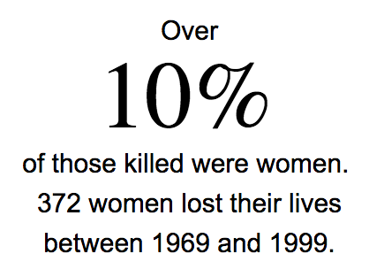

R Francis McCloskey killed in 1969 in East Londonderry
r Samuel Devenny killed in 1969 in Foyle
V Patrick Corry killed in 1969 in West Belfast
u John Gallagher killed in 1969 in Newry & Armagh
W Hugh McCabe killed in 1969 in West Belfast
Y Patrick Rooney killed in 1969 in West Belfast
b Herbert Roy killed in 1969 in West Belfast
A Gerald McAuley killed in 1969 in West Belfast
e Samuel McLarnon killed in 1969 in North Belfast
B Michael Lynch killed in 1969 in North Belfast
f David Linton killed in 1969 in North Belfast
F Jack Todd killed in 1969 in North Belfast
H William King killed in 1969 in Foyle
i Thomas McDowell killed in 1969 in Republic Of Ireland
I Victor Arbuckle killed in 1969 in North Belfast
o George Dickie killed in 1969 in North Belfast
K Herbert Hawe killed in 1969 in North Belfast
q Alexander Gould killed in 1970 in North Belfast
r Daniel Loughlins killed in 1970 in North Belfast
R William Kincaid killed in 1970 in North Belfast
r Thomas McCool killed in 1970 in Foyle
V Carol McCool killed in 1970 in Foyle
u Bernadette McCool killed in 1970 in Foyle
W Joseph Coyle killed in 1970 in Foyle
Y Robert Neill killed in 1970 in East Belfast
b James McCurrie killed in 1970 in East Belfast
A Henry McIlhone killed in 1970 in East Belfast
e Thomas Burns killed in 1970 in West Belfast
B Thomas Reid killed in 1970 in West Belfast
f Charles O'Neill killed in 1970 in West Belfast
F Zbigniew Uglik killed in 1970 in West Belfast
H Thomas Carlin killed in 1970 in Foyle
i Patrick Elliman killed in 1970 in West Belfast
I Daniel O'Hagan killed in 1970 in North Belfast
o Samuel Donaldson killed in 1970 in Newry & Armagh
K Robert Millar killed in 1970 in Newry & Armagh
q Michael Kane killed in 1970 in South Belfast
r David Murray killed in 1970 in North Belfast
R Desmond Lagan killed in 1970 in East Antrim
r Arthur McKenna killed in 1970 in West Belfast
V Alexander McVicker killed in 1970 in West Belfast
u Andrew Jardin killed in 1970 in West Belfast
W Richard Fallon killed in 1970 in South Belfast
Y John Kavanagh killed in 1971 in West Belfast
b Bernard Watt killed in 1971 in North Belfast
A James Saunders killed in 1971 in North Belfast
e Robert Curtis killed in 1971 in North Belfast
B Albert Bell killed in 1971 in West Belfast
f John Eakins killed in 1971 in West Tyrone
F Harry Edgar killed in 1971 in West Tyrone
H George Beck killed in 1971 in West Tyrone
i William Thomas killed in 1971 in West Tyrone
I David Henson killed in 1971 in West Tyrone
o John Laurie killed in 1971 in North Belfast
K Cecil Patterson killed in 1971 in North Belfast
q Robert Buckley killed in 1971 in North Belfast
r William Jolliffe killed in 1971 in Foyle
R William Halligan killed in 1971 in West Belfast
r Charles Hughes killed in 1971 in West Belfast
V John McCaig killed in 1971 in North Belfast
u Joseph McCaig killed in 1971 in North Belfast
W Dougal McCaughey killed in 1971 in North Belfast
Y Isabelle McKeague killed in 1971 in East Belfast
b William Reid killed in 1971 in West Belfast
A Robert Bankier killed in 1971 in South Belfast
e Michael Willets killed in 1971 in West Belfast
B Martin O'Leary killed in 1971 in Republic Of Ireland
f Seamus Cusack killed in 1971 in Foyle
F Desmond Beattie killed in 1971 in Foyle
H David Walker killed in 1971 in West Belfast
i Richard Barton killed in 1971 in West Belfast
I Harry Thornton killed in 1971 in West Belfast
o Malcolm Hatton killed in 1971 in North Belfast
K William Atwell killed in 1971 in West Belfast
q Patrick McAdorey killed in 1971 in South Antrim
r Frank McGuinness killed in 1971 in West Belfast
R Desmond Healey killed in 1971 in West Belfast
r Leo McGuigan killed in 1971 in North Belfast
V Sarah Worthington killed in 1971 in North Belfast
u Noel Phillips killed in 1971 in West Belfast
W Daniel Teggart killed in 1971 in West Belfast
Y Joan Connolly killed in 1971 in West Belfast
b Winston Donnell killed in 1971 in West Tyrone
A Hugh Mullan killed in 1971 in West Belfast
e Norman Watson killed in 1971 in Newry & Armagh
B John Beattie killed in 1971 in West Belfast
f Frank Quinn killed in 1971 in West Belfast
F Edward Doherty killed in 1971 in West Belfast
H Paul Challoner killed in 1971 in Foyle
i John Laverty killed in 1971 in North Belfast
I William McKavanagh killed in 1971 in South Belfast
o Seamus Simpson killed in 1971 in West Belfast
K William Stronge killed in 1971 in North Belfast
q William Ferris killed in 1971 in North Belfast
r Hugh Herron killed in 1971 in Foyle
R John Robinson killed in 1971 in North Belfast
r Eamon Lafferty killed in 1971 in Foyle
V Eamon McDevitt killed in 1971 in Foyle
u James O'Hagan killed in 1971 in Foyle
W John McKerr killed in 1971 in West Belfast
Y George Crozier killed in 1971 in North Belfast
b Harry Beggs killed in 1971 in South Belfast
A Joseph Murphy killed in 1971 in West Belfast
e Joseph Corr killed in 1971 in West Belfast
B Ian Armstong killed in 1971 in Newry & Armagh
f Clifford Loring killed in 1971 in West Belfast
F Francis Veitch killed in 1971 in Fermanagh & South Tyrone
H Angela Gallagher killed in 1971 in West Belfast
i John Warnock killed in 1971 in Newry & Armagh
I Eamon Henry killed in 1971 in Newry & Armagh
o Eamon Hamill killed in 1971 in Newry & Armagh
K Annette McGavigan killed in 1971 in Foyle
q David Stewardson killed in 1971 in South Antrim
r Martin Carroll killed in 1971 in Foyle
R John Rudman killed in 1971 in Fermanagh & South Tyrone
r William McGreanery killed in 1971 in Foyle
V Paul Carter killed in 1971 in West Belfast
u Samuel Nelson killed in 1971 in North Belfast
W Peter Herrington killed in 1971 in North Belfast
Y Robert Leslie killed in 1971 in West Tyrone
b James Finlay killed in 1971 in North Belfast
A Gerard O'Hare killed in 1971 in West Belfast
e Rose Curry killed in 1971 in West Belfast
B Alexander Andrews killed in 1971 in North Belfast
f Ernest Bates killed in 1971 in North Belfast
F Peter Sharpe killed in 1971 in North Belfast
H Terence McDermott killed in 1971 in Lagan Valley
i Patrick Daly killed in 1971 in West Belfast
I Brian Hall killed in 1971 in West Belfast
o Winifred Maxwell killed in 1971 in West Belfast
K John Thompson killed in 1971 in North Belfast
q John Bennett killed in 1971 in West Belfast
r John Haslett killed in 1971 in North Belfast
R Roger Wilkins killed in 1971 in Foyle
r Cecil Cunningham killed in 1971 in North Belfast
V Joseph Hill killed in 1971 in Foyle
u Graham Cox killed in 1971 in West Belfast
W David Thompson killed in 1971 in East Belfast
Y George Hamilton killed in 1971 in West Belfast
R Maura Meehan killed in 1971 in West Belfast
r Dorothy Maguire killed in 1971 in West Belfast
V Sean Ruddy killed in 1971 in Newry & Armagh
u James McLaughlin killed in 1971 in Newry & Armagh
W Robert Anderson killed in 1971 in Newry & Armagh
Y Martin Forsythe killed in 1971 in West Belfast
b Robert Lindsay killed in 1971 in North Belfast
A Robert McFarland killed in 1971 in North Belfast
e Angus Stevens killed in 1971 in Foyle
B David Tilbury killed in 1971 in Foyle
f Ronald Dodd killed in 1971 in South Antrim
F David Powell killed in 1971 in Fermanagh & South Tyrone
H Michael McLarnon killed in 1971 in North Belfast
i Alfred Devlin killed in 1971 in North Belfast
I Norman Booth killed in 1971 in West Belfast
o John Copeland killed in 1971 in North Belfast
K John Cochrane killed in 1971 in South Belfast
q Ian Doherty killed in 1971 in West Belfast
r Thomas Kells killed in 1971 in South Antrim
R Stanley Corry killed in 1971 in West Belfast
r William Russell killed in 1971 in West Belfast
V Mary Gemmell killed in 1971 in South Belfast
u Chris Quinn killed in 1971 in West Belfast
W William Jordan killed in 1971 in South Belfast
Y Stephen Maguire killed in 1971 in West Belfast
b Paul Genge killed in 1971 in Upper Bann
A Kathleen Thompson killed in 1971 in Foyle
e Roberrt Curtis killed in 1971 in Foyle
B Dermot Hurley killed in 1971 in North Belfast
f Walter Moore killed in 1971 in North Belfast
F Reema Heemskerk killed in 1971 in West Belfast
H Edwin Charnely killed in 1971 in East Belfast
i Michael Crossey killed in 1971 in Upper Bann
I Brigid Carr killed in 1971 in West Tyrone
o Colin Davies killed in 1971 in Upper Bann
K James O'Neill killed in 1971 in Newry & Armagh
q Ian Hankin killed in 1971 in Newry & Armagh
r Paul Nicholls killed in 1971 in West Belfast
R Vivian Gibney killed in 1971 in North Belfast
r Robert Benner killed in 1971 in Newry & Armagh
V James Cromie killed in 1971 in North Belfast
u Philomena McGurk killed in 1971 in North Belfast
W Marie McGurk killed in 1971 in North Belfast
Y Edward Keenan killed in 1971 in North Belfast
b Sarah Keenan killed in 1971 in North Belfast
A John Colton killed in 1971 in North Belfast
e Thomas McLaughlin killed in 1971 in North Belfast
B David Milligan killed in 1971 in North Belfast
f James Smyth killed in 1971 in North Belfast
F Francis Bradley killed in 1971 in North Belfast
H Thomas Kane killed in 1971 in North Belfast
i Philip Garry killed in 1971 in North Belfast
I Kathleen Irvine killed in 1971 in North Belfast
o Edward Kane killed in 1971 in North Belfast
K Robert Spotswood killed in 1971 in North Belfast
q Isabel Thompson killed in 1971 in South Belfast
r Denis Wilson killed in 1971 in Fermanagh & South Tyrone
R Anthony Nolan killed in 1971 in West Belfast
r Jeremy Snow killed in 1971 in North Belfast
V Sean Russell killed in 1971 in West Belfast
u Kenneth Smith killed in 1971 in West Tyrone
W Daniel McCormick killed in 1971 in West Tyrone
Y Joseph Parker killed in 1971 in North Belfast
R Tracey Munn killed in 1971 in West Belfast
r Harold King killed in 1971 in West Belfast
V Hugh Bruce killed in 1971 in West Belfast
u Colin Nicholl killed in 1971 in West Belfast
W John Barnhill killed in 1971 in West Tyrone
Y Martin McShane killed in 1971 in Fermanagh & South Tyrone
b Anthony Aspinall killed in 1971 in West Belfast
A James Callum killed in 1971 in West Belfast
e John Bateson killed in 1971 in Mid Ulster
B Martin Lee killed in 1971 in Mid Ulster
f James Sheridan killed in 1971 in Mid Ulster
F Margaret McCorry killed in 1971 in North Belfast
H John Lavery killed in 1971 in South Belfast
i Gerard McDade killed in 1971 in North Belfast
I Richard Ham killed in 1971 in Foyle
o Jack McCabe killed in 1971 in Republic Of Ireland
K Kenneth Easthaugh killed in 1971 in North Belfast
q Peter Graham killed in 1971 in Republic Of Ireland
r Tony Henderson killed in 1971 in Republic Of Ireland
R Keith Bryan killed in 1972 in North Belfast
r Dan O'Neill killed in 1972 in West Belfast
V Michael Sloan killed in 1972 in West Belfast
u Raymond Denham killed in 1972 in West Belfast
W Maynard Crawford killed in 1972 in South Antrim
Y Eamon McCormick killed in 1972 in West Belfast
b Sydney Agnew killed in 1972 in East Belfast
A Philip Stentiford killed in 1972 in Newry & Armagh
e Peter McNulty killed in 1972 in South Down
B Peter Gilgun killed in 1972 in Foyle
f Peter Woods killed in 1972 in North Belfast
F David Montgomery killed in 1972 in Foyle
H Raymond Carroll killed in 1972 in North Belfast
i Robin Alers-Hankey killed in 1972 in Foyle
I Patrick Doherty killed in 1972 in Foyle
o Michael Kelly killed in 1972 in Foyle
K Bernard McGuigan killed in 1972 in Foyle
q William McKinney killed in 1972 in Foyle
r John Duddy killed in 1972 in Foyle
R William Nash killed in 1972 in Foyle
r Hugh Gilmore killed in 1972 in Foyle
V James Wray killed in 1972 in Foyle
u Joseph Cunningham killed in 1972 in East Antrim
W Michael McDaid killed in 1972 in Foyle
Y John Young killed in 1972 in Foyle
b Gerald McKinney killed in 1972 in Foyle
A Gerald Donaghy killed in 1972 in Foyle
e Kevin McElhinney killed in 1972 in Foyle
B Ian Bramley killed in 1972 in West Belfast
f Thomas McIlroy killed in 1972 in West Belfast
F Louis O'Neill killed in 1972 in Mid Ulster
H Paul McFadden killed in 1972 in West Belfast
i Phelim Grant killed in 1972 in South Antrim
I Charles McCann killed in 1972 in South Antrim
o David Seaman killed in 1972 in Newry & Armagh
K Bernard Rice killed in 1972 in North Belfast
q Patrick Casey killed in 1972 in Newry & Armagh
r Ian Harris killed in 1972 in Newry & Armagh
R David Champ killed in 1972 in Newry & Armagh
r Thomas McCann killed in 1972 in Fermanagh & South Tyrone
V Thomas Callaghan killed in 1972 in Foyle
u Michael Prime killed in 1972 in Lagan Valley
W Elizabeth English killed in 1972 in West Belfast
Y David McAuley killed in 1972 in North Belfast
R Gerard Steele killed in 1972 in East Belfast
r Gerard Bell killed in 1972 in East Belfast
V Joseph Magee killed in 1972 in East Belfast
u Robert Dorrian killed in 1972 in East Belfast
W Gerard Weston killed in 1972 in Great Britain
Y Joan Lunn killed in 1972 in Great Britain
b Cherie Munton killed in 1972 in Great Britain
A Thelma Bosley killed in 1972 in Great Britain
e Margaret Grant killed in 1972 in Great Britain
B John Haslar killed in 1972 in Great Britain
f Jill Mansfield killed in 1972 in Great Britain
F Gerald Doherty killed in 1972 in Foyle
H Henry Dickson killed in 1972 in Upper Bann
i John Fletcher killed in 1972 in Fermanagh & South Tyrone
I John Maughan killed in 1972 in West Belfast
o Michael Connors killed in 1972 in West Belfast
K Thomas Morrow killed in 1972 in Newry & Armagh
q Stephen Keating killed in 1972 in North Belfast
r Albert Kavanagh killed in 1972 in South Belfast
R Marcus McCausland killed in 1972 in Foyle
r Anne Owens killed in 1972 in West Belfast
V Janet Bereen killed in 1972 in West Belfast
u Eamon Gamble killed in 1972 in Newry & Armagh
W Joseph Jardine killed in 1972 in Newry & Armagh
Y John Johnson killed in 1972 in West Belfast
b Gerard Crossan killed in 1972 in West Belfast
A Anthony Lewis killed in 1972 in West Belfast
e Tom McCann killed in 1972 in West Belfast
B Bernadette Hyndman killed in 1972 in West Belfast
f Patrick McCrory killed in 1972 in South Belfast
F Colm Keenan killed in 1972 in Foyle
H Eugene McGillian killed in 1972 in Foyle
i William Logan killed in 1972 in Fermanagh & South Tyrone
I Anthony Butcher killed in 1972 in West Belfast
o Christopher Cracknell killed in 1972 in West Belfast
K James O'Hanlon killed in 1972 in North Belfast
q Carmel Knox killed in 1972 in Upper Bann
r John Jonson killed in 1972 in Foyle
R Ernest McAllister killed in 1972 in West Belfast
r Bernard O'Neill killed in 1972 in West Belfast
V Ernest Dougan killed in 1972 in West Belfast
u Samuel Trainor killed in 1972 in West Belfast
W James Macklin killed in 1972 in West Belfast
Y Sydney Bell killed in 1972 in West Belfast
b John Taylor killed in 1972 in Foyle
A Sean O'Riordan killed in 1972 in West Belfast
e Patrick Campbell killed in 1972 in West Belfast
B Ingram Beckett killed in 1972 in North Belfast
f Joseph Forsyth killed in 1972 in East Londonderry
F Robert McMIchael killed in 1972 in East Londonderry
H Ruby Johnston killed in 1972 in Newry & Armagh
i Bernard Calladene killed in 1972 in West Belfast
I Martha Crawford killed in 1972 in West Belfast
o Henry Millar killed in 1972 in West Belfast
K Charles McCrystal killed in 1972 in South Antrim
q Samuel Hughes killed in 1972 in South Antrim
r John McErlean killed in 1972 in South Antrim
R Peter Sime killed in 1972 in West Belfast
r Eric Blackburn killed in 1972 in Foyle
V Brian Thomasson killed in 1972 in Foyle
u Elizabeth McAuley killed in 1972 in North Antrim
W Joseph McCann killed in 1972 in South Belfast
Y Sean McConville killed in 1972 in North Belfast
R Martin Robinson killed in 1972 in Foyle
r Nick Hull killed in 1972 in West Belfast
V Gerard Bristow killed in 1972 in Foyle
u Patrick Magee killed in 1972 in West Belfast
W Patrick Doonaghey killed in 1972 in West Belfast
Y James Elliott killed in 1972 in Newry & Armagh
b Martin Owens killed in 1972 in West Belfast
A Gerard Donnelly killed in 1972 in North Belfast
e Francis Rowntree killed in 1972 in West Belfast
B Joseph Gold killed in 1972 in West Belfast
f Rosalee Gavin killed in 1972 in North Belfast
F David Curie killed in 1972 in East Antrim
H Victor Andrews killed in 1972 in North Belfast
i John Ballard killed in 1972 in West Belfast
I Joseph McVeigh killed in 1972 in West Belfast
o Thomas McIlroy killed in 1972 in West Belfast
K Alan Buckley killed in 1972 in West Belfast
q Michael Magee killed in 1972 in West Belfast
r Robert McMullan killed in 1972 in West Belfast
R John Starrs killed in 1972 in Foyle
r Gerard McCusker killed in 1972 in North Belfast
V John Pedlow killed in 1972 in West Belfast
u Martha Campbell killed in 1972 in West Belfast
W Bernard Moane killed in 1972 in East Antrim
Y Ronald Hurst killed in 1972 in Newry & Armagh
b John Hillman killed in 1972 in North Belfast
A Harold Morris killed in 1972 in North Belfast
e Manus Deery killed in 1972 in Foyle
B William Best killed in 1972 in Foyle
f Henry Gillespie killed in 1972 in Fermanagh & South Tyrone
F Aidrian Barton killed in 1972 in West Belfast
H Richard Oliver killed in 1972 in North Belfast
i William Hughes killed in 1972 in Mid Ulster
I John Moran killed in 1972 in West Belfast
o Eustace Handley killed in 1972 in West Belfast
K Andrew Brennan killed in 1972 in South Belfast
q Margaret Young killed in 1972 in West Belfast
r Gerard Duddy killed in 1972 in West Belfast
R James Teer killed in 1972 in West Belfast
r Harry Crawford killed in 1972 in East Belfast
V Martin Engelen killed in 1972 in East Belfast
u Edward McDonald killed in 1972 in East Belfast
W John Nugent killed in 1972 in East Belfast
Y Mary Clark killed in 1972 in East Belfast
b Joseph Fitzsimmons killed in 1972 in East Belfast
A John McIlhone killed in 1972 in East Belfast
e Geraldine McMahon killed in 1972 in East Belfast
B Thomas Wardlow killed in 1972 in West Belfast
f Marcel Dogley killed in 1972 in West Belfast
F Joan Scott killed in 1972 in North Belfast
H Leonard McAteer killed in 1972 in South Down
i Michael Bruce killed in 1972 in West Belfast
I Victor Husband killed in 1972 in Fermanagh & South Tyrone
o Brian Robertson killed in 1972 in Fermanagh & South Tyrone
K Gerald Murray killed in 1972 in North Belfast
q George Lee killed in 1972 in West Belfast
r Charles Coleman killed in 1972 in West Belfast
R Norman Campbell killed in 1972 in West Belfast
r Samuel Donegan killed in 1972 in Republic Of Ireland
V Jean Smith killed in 1972 in West Belfast
u Edward Megahey killed in 1972 in Foyle
W Roy Staunton killed in 1972 in South Belfast
Y Marion Brown killed in 1972 in West Belfast
R Peter Raistrick killed in 1972 in Foyle
r John Madden killed in 1972 in North Belfast
V Joseph Campbell killed in 1972 in North Belfast
u Norman McGrath killed in 1972 in North Belfast
W Alan Giles killed in 1972 in North Belfast
Y Charles Connor killed in 1972 in Lagan Valley
b Arthur McMillan killed in 1972 in Upper Bann
A Ian Mutch killed in 1972 in Upper Bann
e Colin Leslie killed in 1972 in Upper Bann
B Desmond Macklin killed in 1972 in West Belfast
f Bryan Sodden killed in 1972 in North Belfast
F Kerry McCarthy killed in 1972 in Foyle
H Patrick McCullough killed in 1972 in North Belfast
i David Moon killed in 1972 in Foyle
I Stuart Reid killed in 1972 in Foyle
o Christopher Stevenson killed in 1972 in Foyle
K John Brown killed in 1972 in West Belfast
q James Bonner killed in 1972 in West Belfast
r John Black killed in 1972 in East Belfast
R David Houston killed in 1972 in Newry & Armagh
r James Meredith killed in 1972 in Foyle
V Malcom Banks killed in 1972 in East Belfast
u William Galloway killed in 1972 in North Belfast
W Bernard Norney killed in 1972 in West Belfast
Y Daniel Hayes killed in 1972 in North Belfast
b Paul Joblings killed in 1972 in West Belfast
A Hugh Clawson killed in 1972 in North Belfast
e David Fisher killed in 1972 in North Belfast
B Gerard McCrea killed in 1972 in West Belfast
f James Howell killed in 1972 in West Belfast
F John O'Hanlon killed in 1972 in North Belfast
H Denis Quinn killed in 1972 in Fermanagh & South Tyrone
i Malcolm Orr killed in 1972 in North Belfast
I Peter Orr killed in 1972 in North Belfast
o Samuel Robinson killed in 1972 in West Belfast
K Lawrence McKenna killed in 1972 in West Belfast
q Joseph Fleming killed in 1972 in West Belfast
r Brian McMillan killed in 1972 in West Belfast
R Gerald Turkington killed in 1972 in South Belfast
r David Andrews killed in 1972 in North Belfast
V Alan Meehan killed in 1972 in West Belfast
u Angelo Fiondo killed in 1972 in West Belfast
W Patrick Butler killed in 1972 in West Belfast
Y Margaret Gargan killed in 1972 in West Belfast
b David McCaffrey killed in 1972 in West Belfast
A Noel Fitzpatrick killed in 1972 in West Belfast
e John Dougal killed in 1972 in West Belfast
B Charles Watson killed in 1972 in North Belfast
f Gerard Gibson killed in 1972 in West Belfast
F Terence Jones killed in 1972 in Foyle
H Paul Beattie killed in 1972 in Upper Bann
i David McClenaghan killed in 1972 in North Belfast
I Colin Poots killed in 1972 in West Belfast
o Martin Rooney killed in 1972 in West Belfast
K Jack McCabe killed in 1972 in Upper Bann
q William Cochrane killed in 1972 in Upper Bann
r Thomas Burns killed in 1972 in North Belfast
R Kenneth Mogg killed in 1972 in West Belfast
r Henry Russell killed in 1972 in East Belfast
V David Meeke killed in 1972 in North Belfast
u Robert Wynn-Williams killed in 1972 in West Belfast
W Peter Heppenstall killed in 1972 in North Belfast
Y James Reid killed in 1972 in North Belfast
R Terry Toolan killed in 1972 in North Belfast
r Lewis Scullion killed in 1972 in North Belfast
V John Williams killed in 1972 in North Belfast
u Edward Brady killed in 1972 in North Belfast
W Jane McIntyre killed in 1972 in West Belfast
Y Kenneth Canham killed in 1972 in West Belfast
b John Mooney killed in 1972 in North Belfast
A John Young killed in 1972 in Newry & Armagh
e Robert Lavery killed in 1972 in North Belfast
B Tobias Mulloy killed in 1972 in West Tyrone
f Francis McKeown killed in 1972 in West Belfast
F James Lee killed in 1972 in Newry & Armagh
H Terence Graham killed in 1972 in Newry & Armagh
i James Jones killed in 1972 in West Belfast
I Thomas Mills killed in 1972 in West Belfast
o Henry Gray killed in 1972 in West Belfast
K Alan Jack killed in 1972 in West Tyrone
q Hugh Wright killed in 1972 in North Belfast
r Robert Legget killed in 1972 in West Belfast
R Anthony Davidson killed in 1972 in West Belfast
r William Crothers killed in 1972 in South Belfast
V William Irvine killed in 1972 in South Belfast
u Jack Gibson killed in 1972 in South Belfast
W Thomas Killops killed in 1972 in South Belfast
Y Stephen Cooper killed in 1972 in South Belfast
b Philip Price killed in 1972 in South Belfast
A Stephen Parker killed in 1972 in North Belfast
e Margaret O'Hare killed in 1972 in North Belfast
B Brigitta Murray killed in 1972 in North Belfast
f Joseph Rosatto killed in 1972 in North Belfast
F Joseph Downey killed in 1972 in South Belfast
H Patrick O'Neill killed in 1972 in West Belfast
i Rose McCartney killed in 1972 in West Belfast
I Francis Arthurs killed in 1972 in North Belfast
o Robert McCombe killed in 1972 in North Belfast
K George Bunting killed in 1972 in North Belfast
q James Casey killed in 1972 in Foyle
r Frederick Maguire killed in 1972 in West Belfast
R Brian Thomas killed in 1972 in West Belfast
r James Kenna killed in 1972 in West Belfast
V David Allen killed in 1972 in West Belfast
u Frank Corr killed in 1972 in North Belfast
W James McGerty killed in 1972 in North Belfast
Y Francis McStravick killed in 1972 in South Belfast
b Philip Maguire killed in 1972 in East Belfast
A James Cassidy killed in 1972 in North Belfast
e Daniel Dunne killed in 1972 in South Belfast
B William McAfee killed in 1972 in East Belfast

f Daniel Hegarty killed in 1972 in Foyle
F Seamus Bradley killed in 1972 in Foyle
H Catherine Eakin killed in 1972 in Foyle
i Elizabeth McElhinney killed in 1972 in Foyle
I James McClelland killed in 1972 in Foyle
o Joseph McCloskey killed in 1972 in Foyle
K David Miller killed in 1972 in Foyle
q William Temple killed in 1972 in Foyle
r Rose McLaughlin killed in 1972 in Foyle
R William Clark killed in 1972 in West Tyrone
r Robert McCrudden killed in 1972 in North Belfast
V David Card killed in 1972 in West Belfast
u Felix Hughes killed in 1972 in Upper Bann
W David Wynne killed in 1972 in Fermanagh & South Tyrone
Y Erroll Gordon killed in 1972 in Fermanagh & South Tyrone
R Terence Hennebry killed in 1972 in West Belfast
r Geoffrey Knipe killed in 1972 in Newry & Armagh
V William Crieghton killed in 1972 in Fermanagh & South Tyrone
u Joseph Connolly killed in 1972 in Foyle
W Colm Murtagh killed in 1972 in Newry & Armagh
Y Anne Parker killed in 1972 in West Belfast
b Michael Clark killed in 1972 in West Belfast
A Arty Hone killed in 1972 in Foyle
e Francis Wynn killed in 1972 in North Belfast
B Thomas Madden killed in 1972 in North Belfast
f David Storey killed in 1972 in West Belfast
F Brian Hope killed in 1972 in West Belfast
H Charles McNeill killed in 1972 in North Belfast
i William Spence killed in 1972 in West Belfast
I Michael Swanick killed in 1972 in South Down
o Patrick McGoldrick killed in 1972 in West Tyrone
K Michael Boddy killed in 1972 in West Belfast
q Philip Fay killed in 1972 in East Belfast
r Lennie Layfield killed in 1972 in West Belfast
R Richard Jones killed in 1972 in West Belfast
r James Neill killed in 1972 in West Belfast
V James Lindsay killed in 1972 in West Belfast
u Frank Quinn killed in 1972 in Newry & Armagh
W Pat Murphy killed in 1972 in Newry & Armagh
Y Lawrence Craig killed in 1972 in Newry & Armagh
b Michael Gilleece killed in 1972 in Newry & Armagh
A Joseph Fegan killed in 1972 in Newry & Armagh
e John McCann killed in 1972 in Newry & Armagh
B Oliver Rowntree killed in 1972 in Newry & Armagh
f Noel Madden killed in 1972 in Newry & Armagh
F Patrick Hughes killed in 1972 in Newry & Armagh
H James Johnston killed in 1972 in West Belfast
i Alan Tingey killed in 1972 in West Belfast
I Ian Caie killed in 1972 in Newry & Armagh
o Arhtur #F3C13Arock killed in 1972 in Foyle
K Alfred Johnston killed in 1972 in Fermanagh & South Tyrone
q James Eames killed in 1972 in Fermanagh & South Tyrone
r John Nulty killed in 1972 in North Belfast
R Patrick Kelly killed in 1972 in North Belfast
r Thomas Boyd killed in 1972 in South Antrim
V Anthony Metcalfe killed in 1972 in Foyle
u James Carlan killed in 1972 in South Down
W Martin Curran killed in 1972 in South Down
Y Ian Morrell killed in 1972 in West Belfast
b Ronald Rowe killed in 1972 in North Belfast
A William Trotter killed in 1972 in Fermanagh & South Tyrone
e Roy Christopher killed in 1972 in West Belfast
B Patrick Devenney killed in 1972 in South Belfast
f Eamon McMahon killed in 1972 in Upper Bann
F Robert Cutting killed in 1972 in North Belfast
H Victor Smith killed in 1972 in Upper Bann
i Samuel Boyde killed in 1972 in West Belfast
I William Moore killed in 1972 in East Belfast
o Bridget Breen killed in 1972 in South Antrim
K Robert McKinney killed in 1972 in North Belfast
q Robert Johnston killed in 1972 in North Belfast
r David Griffiths killed in 1972 in West Belfast
R Lawrence Jubb killed in 1972 in Newry & Armagh
r Duncan McPhee killed in 1972 in Fermanagh & South Tyrone
V Douglas Richmond killed in 1972 in Fermanagh & South Tyrone
u William McIntyre killed in 1972 in Fermanagh & South Tyrone
W Patrick Doyle killed in 1972 in West Belfast
Y Robert Warnock killed in 1972 in East Belfast
R Andrew McKibben killed in 1972 in North Belfast
r John Davis killed in 1972 in Foyle
V Martha Smilie killed in 1972 in North Belfast
u Anne Murray killed in 1972 in North Belfast
W Sinclair Johnston killed in 1972 in East Antrim
Y Michael Quigley killed in 1972 in Foyle
b John Van Beck killed in 1972 in Foyle
A Edmund Woolsey killed in 1972 in Newry & Armagh
e Frank Bell killed in 1972 in West Belfast
B Joseph McComiskey killed in 1972 in North Belfast
f Thomas Stoker killed in 1972 in West Belfast
F Thomas Bullock killed in 1972 in Fermanagh & South Tyrone
H Emily Bullock killed in 1972 in Fermanagh & South Tyrone
i William Mathews killed in 1972 in West Belfast
I Stewart Gardner killed in 1972 in Newry & Armagh
o John Barry killed in 1972 in West Belfast
K Paul McCartan killed in 1972 in East Belfast
q George Lockhart killed in 1972 in Foyle
r Daniel Rooney killed in 1972 in West Belfast
R Daniel McErlean killed in 1972 in West Belfast
r James Joseph Boyle killed in 1972 in West Belfast
V Alexander Greer killed in 1972 in North Belfast
u Edward Pavis killed in 1972 in South Belfast
W Ian Burt killed in 1972 in West Belfast
Y James Quigley killed in 1972 in West Belfast
b Patricia McKay killed in 1972 in West Belfast
A Thomas Rudman killed in 1972 in North Belfast
e Francis Lane killed in 1972 in North Belfast
B John Kelly killed in 1972 in West Belfast
f Thomas Paisley killed in 1972 in South Antrim
F Patrick McKee killed in 1972 in West Belfast
H Michael Hayes killed in 1972 in North Belfast
i Edward Stuart killed in 1972 in West Belfast
I Edward Bonner killed in 1972 in West Belfast
o James McCartan killed in 1972 in East Belfast
K Geoffrey Hamilton killed in 1972 in West Belfast
q Patrick Connolly killed in 1972 in Upper Bann
r John Magee killed in 1972 in South Belfast
R Daniel McAreavey killed in 1972 in West Belfast
r Olive McConnell killed in 1972 in West Belfast
V Alexander Moorehead killed in 1972 in West Tyrone
u John Ruddy killed in 1972 in Newry & Armagh
W John McKenna killed in 1972 in West Belfast
Y Joseph McKinney killed in 1972 in West Belfast
b John Donaghy killed in 1972 in West Belfast
A Patrick Maguire killed in 1972 in South Antrim
e Robert Nicholl killed in 1972 in West Belfast
B Terence Maguire killed in 1972 in East Belfast
f Leo Duffy killed in 1972 in South Belfast
F Thomas Marron killed in 1972 in South Belfast
H John Thompson killed in 1972 in North Belfast
i James Doherty killed in 1972 in West Belfast
I John Clark killed in 1972 in East Belfast
o William Warnock killed in 1972 in East Belfast
K Hugh Herron killed in 1972 in Mid Ulster
q Patrick Mullan killed in 1972 in Mid Ulster
r Anthony David killed in 1972 in North Belfast
R Elanor Cooke killed in 1972 in North Belfast
r John Todd killed in 1972 in North Belfast
V James Gillen killed in 1972 in West Belfast
u Gordon Harron killed in 1972 in East Belfast
W John Bell killed in 1972 in Fermanagh & South Tyrone
Y Robert Mason killed in 1972 in West Belfast
R John Morrell killed in 1972 in Newry & Armagh
r Michael Naan killed in 1972 in Fermanagh & South Tyrone
V Andrew Murray killed in 1972 in Fermanagh & South Tyrone
u Thomas McKay killed in 1972 in Foyle
W Michael Turner killed in 1972 in North Belfast
Y James Kerr killed in 1972 in South Belfast
b Richard Sinclair killed in 1972 in North Belfast
A Paula Strong killed in 1972 in North Belfast
e Clare Hughes killed in 1972 in North Belfast
B Irwin Long killed in 1972 in Upper Bann
f Ronald Kitchen killed in 1972 in North Belfast
F Gerard Kelly killed in 1972 in North Belfast
H Stanislaus Carberry killed in 1972 in West Belfast
i Joseph McCrystal killed in 1972 in South Antrim
I Stanley Evans killed in 1972 in North Belfast
o George Doherty killed in 1972 in East Belfast
K Joseph Calvin killed in 1972 in Fermanagh & South Tyrone
q William Watson killed in 1972 in Newry & Armagh
r James Strothers killed in 1972 in Newry & Armagh
R William Clarke killed in 1972 in West Belfast
r Joseph McIlroy killed in 1972 in East Belfast
V Samuel Porter killed in 1972 in East Londonderry
u Liam Shivers killed in 1972 in East Londonderry
W Rory Gormley killed in 1972 in North Belfast
Y Robert Keys killed in 1972 in Fermanagh & South Tyrone
b John Brady killed in 1972 in Foyle
A James Carr killed in 1972 in Foyle
e Paul Jackson killed in 1972 in Foyle
B Gerry Gearon killed in 1972 in North Belfast
f George Bradshaw killed in 1972 in Republic Of Ireland
F Thomas Duffy killed in 1972 in Republic Of Ireland
H Joseph McAuley killed in 1972 in North Antrim
i Patrick Banstead killed in 1972 in East Belfast
I Sandra Meli killed in 1972 in East Belfast
o Samuel Hamilton killed in 1972 in East Belfast
K Bernard Fox killed in 1972 in North Belfast
q William Bell killed in 1972 in North Belfast
r Roy Hillis killed in 1972 in Upper Bann
R William Bogle killed in 1972 in West Tyrone
r Samuel White killed in 1972 in East Belfast
V Ernest Elliott killed in 1972 in South Belfast
u John Joesbury killed in 1972 in West Belfast
W Joseph Kelly killed in 1972 in East Belfast
Y Stewart Middlemass killed in 1972 in West Belfast
b Joseph Ward killed in 1972 in North Belfast
A Joseph Nixon killed in 1972 in North Belfast
e James Reynolds killed in 1972 in North Belfast
B Kathleen Dolan killed in 1972 in West Tyrone
f George Chambers killed in 1972 in Upper Bann
F Frederick Greeves killed in 1972 in Newry & Armagh
H Louis Leonard killed in 1972 in Fermanagh & South Tyrone
i Joseph Blaney killed in 1972 in North Belfast
I William Johnston killed in 1972 in Newry & Armagh
o David McAleese killed in 1972 in East Belfast
K Ellis Hamilton killed in 1972 in Foyle
q Alphonsus McGeown killed in 1972 in Fermanagh & South Tyrone
r Michael McGinley killed in 1972 in Foyle
R Charles McCafferty killed in 1972 in Foyle
r Charles Moore killed in 1972 in Foyle
V Bernard Kelly killed in 1972 in Foyle
u Francis McCarron killed in 1972 in Foyle
W James Mullan killed in 1972 in North Down
Y Eugene Devlin killed in 1972 in West Tyrone
R Geraldine O'Reilly killed in 1972 in Republic Of Ireland
r Patrick Stanley killed in 1972 in Republic Of Ireland
V James McDaid killed in 1972 in Foyle
u Hugh Martin killed in 1972 in East Belfast
W Anthony Ahearne killed in 1972 in Fermanagh & South Tyrone
Y Jean McConville killed in 1972 in West Belfast
b Kevin McKee killed in 1972 in West Belfast
A Craig Lawrence killed in 1972 in Newry & Armagh
e Seamus Wright killed in 1972 in West Belfast
B Kevin McKee killed in 1972 in North Belfast
f Colin Harker killed in 1972 in Foyle
F Oliver Boyce killed in 1973 in Republic Of Ireland
H Briege Porter killed in 1973 in Republic Of Ireland
i John Mooney killed in 1973 in East Belfast
I James Hood killed in 1973 in East Londonderry
o Trevor Rankin killed in 1973 in North Belfast
K Elizabeth McGregor killed in 1973 in North Belfast
q Henry Sandford killed in 1973 in West Tyrone
r David Dorsett killed in 1973 in Foyle
R Mervyn Wilson killed in 1973 in Foyle
r David Bingham killed in 1973 in North Belfast
V Arthur Liggett killed in 1973 in West Belfast
u Joseph Weir killed in 1973 in Upper Bann
W Thomas Douglas killed in 1973 in Republic Of Ireland
Y Ann Rowland killed in 1973 in Upper Bann
b William Staunton killed in 1973 in West Belfast
A James Trainor killed in 1973 in West Belfast
e Peter Watterson killed in 1973 in West Belfast
B Francis Smith killed in 1973 in West Belfast
f Philip Rafferty killed in 1973 in Lagan Valley
F Gabriel Savage killed in 1973 in West Belfast
H Patrick Heenan killed in 1973 in East Belfast
i William Boardley killed in 1973 in West Tyrone
I James Greer killed in 1973 in West Belfast
o Robert Burns killed in 1973 in North Belfast
K Patrick Brady killed in 1973 in West Belfast
q Alfredo Fusco killed in 1973 in North Belfast
r James Sloan killed in 1973 in North Belfast
R John Loughran killed in 1973 in North Belfast
r James McCann killed in 1973 in North Belfast
V Ambrose Hardy killed in 1973 in North Belfast
u Brendan Maguire killed in 1973 in North Belfast
W Anthony Campbell killed in 1973 in North Belfast
Y John Boyd killed in 1973 in East Belfast
b Seamus Gilmore killed in 1973 in North Belfast
A Michael Murtagh killed in 1973 in West Belfast
e Andrew Petheridge killed in 1973 in East Belfast
B Robert Bennett killed in 1973 in East Belfast
f Glenn Clarke killed in 1973 in North Belfast
F Brian Douglas killed in 1973 in South Belfast
H Hugh Connolly killed in 1973 in North Belfast
i Charles Morrison killed in 1973 in Fermanagh & South Tyrone
I Leo Hanlon killed in 1973 in Strangford
o Vivienne Fitszimmons killed in 1973 in Strangford
K Francis Taggart killed in 1973 in East Belfast
q Anthony Coleman killed in 1973 in West Belfast
r David McAleese killed in 1973 in West Belfast
R William Cook killed in 1973 in North Belfast
r Robert Pearson killed in 1973 in North Belfast
V Malcom Shaw killed in 1973 in North Belfast
u Michael Doyle killed in 1973 in West Belfast
W Leonard Durber killed in 1973 in East Belfast
Y Gordon Gallagher killed in 1973 in Foyle
R Raymond Wylie killed in 1973 in Upper Bann
r Kevin Heatley killed in 1973 in Newry & Armagh
V Alan Kennington killed in 1973 in North Belfast
u Stephen Kernan killed in 1973 in North Belfast
W Daniel Bowen killed in 1973 in West Belfast
Y Paddy Crossan killed in 1973 in North Belfast
b George Wamsley killed in 1973 in North Belfast
A David Deacon killed in 1973 in Foyle
e Raymond Hall killed in 1973 in East Belfast
B Gary Barlow killed in 1973 in West Belfast
f Anton Brown killed in 1973 in West Belfast
F David Glennon killed in 1973 in North Belfast
H John Green killed in 1973 in North Belfast
i Joseph Leahy killed in 1973 in Newry & Armagh
I Dennis Eccles killed in 1973 in North Belfast
o Alan Welsh killed in 1973 in East Belfast
K Edward Sharpe killed in 1973 in North Belfast
q John King killed in 1973 in Newry & Armagh
r Larry McMahon killed in 1973 in South Antrim
R William Kenny killed in 1973 in North Belfast
r Lindsay Mooney killed in 1973 in Republic Of Ireland
V Michael Gay killed in 1973 in Fermanagh & South Tyrone
u Robert Collins killed in 1973 in North Belfast
W Bernard McErlean killed in 1973 in West Belfast
Y Michael Muldoon killed in 1973 in North Belfast
b Barrington Foster killed in 1973 in North Belfast
A Sgt. Swain killed in 1973 in North Belfast
e Thomas Penrose killed in 1973 in North Belfast
B John Huddleston killed in 1973 in West Belfast
f Robert McAuley killed in 1973 in Upper Bann
F Samuel Martin killed in 1973 in Newry & Armagh
H Patrick McCabe killed in 1973 in North Belfast
i Andrew Somerville killed in 1973 in West Tyrone
I Michael Marr killed in 1973 in West Belfast
o David McQueen killed in 1973 in North Down
K Stephen Harrison killed in 1973 in Newry & Armagh
q Terence Brown killed in 1973 in Newry & Armagh
r Peter McGerrigan killed in 1973 in Newry & Armagh
R Charles Marchant killed in 1973 in Upper Bann
r Anthony Hughes killed in 1973 in Newry & Armagh
V Keith Evans killed in 1973 in Foyle
u Edward O'Rawe killed in 1973 in West Belfast
W Joseph Adair killed in 1973 in East Belfast
Y Robert Millan killed in 1973 in South Belfast
b Margaret Miller killed in 1973 in West Belfast
A Brian Smyth killed in 1973 in North Belfast
e Anthony McDowell killed in 1973 in North Belfast
B Mervyn Connor killed in 1973 in North Belfast
f Anthony Godfellow killed in 1973 in Foyle
F Kerry Venn killed in 1973 in Foyle
H Graham Cox killed in 1973 in North Belfast
i Liam McDonald killed in 1973 in South Antrim
I Thomas Crump killed in 1973 in Foyle
o William Vines killed in 1973 in Newry & Armagh
K John Gibbons killed in 1973 in Newry & Armagh
q Terence Williams killed in 1973 in Newry & Armagh
r Frank Cadoo killed in 1973 in Fermanagh & South Tyrone
R Thomas Taylor killed in 1973 in West Belfast
r Kevin Kilpatrick killed in 1973 in Mid Ulster
V John McCormick killed in 1973 in West Belfast
u John Gaskell killed in 1973 in West Belfast
W Roy Rutherdord killed in 1973 in Upper Bann
Y Michael Leonard killed in 1973 in Fermanagh & South Tyrone
R Eileen Mackin killed in 1973 in West Belfast
r Thomas Ward killed in 1973 in South Belfast
V Arthur Place killed in 1973 in West Tyrone
u Sheridan Young killed in 1973 in West Tyrone
W Derek Reed killed in 1973 in West Tyrone
Y Barry Cox killed in 1973 in West Tyrone
b Joseph McKenna killed in 1973 in North Belfast
A Sean McKee killed in 1973 in North Belfast
e Robert McIntyre killed in 1973 in North Belfast
B Edward Coogan killed in 1973 in North Belfast
f Thomas Friel killed in 1973 in Foyle
F Ian Donald killed in 1973 in Newry & Armagh
H John Wallace killed in 1973 in Newry & Armagh
i Joseph Matthews killed in 1973 in Lagan Valley
I Paul Crummey killed in 1973 in West Belfast
o Margaret Hrykiewicz killed in 1973 in North Belfast
K Thomas Curry killed in 1973 in North Belfast
q Gerard Barnes killed in 1973 in West Belfast
r Samuel McCleave killed in 1973 in West Belfast
R Alfred Acheson killed in 1973 in North Belfast
r Sarah McCombe killed in 1973 in North Belfast
V Frederick Drake killed in 1973 in West Tyrone
u David Purvis killed in 1973 in Fermanagh & South Tyrone
W Terence Herdman killed in 1973 in Fermanagh & South Tyrone
Y Daniel O'Neill killed in 1973 in North Belfast
b Samuel Rush killed in 1973 in East Belfast
A Francis Campbell killed in 1973 in East Londonderry
e Nan Davis killed in 1973 in East Londonderry
B Dinah Campbell killed in 1973 in East Londonderry
f Elizabeth Craigmile killed in 1973 in East Londonderry
F Elizabeth Palmer killed in 1973 in East Londonderry
H Robert Scott killed in 1973 in East Londonderry
i Anthony Mitchell killed in 1973 in West Belfast
I Michael Wilson killed in 1973 in South Belfast
o Daniel Rouse killed in 1973 in South Belfast
K Joseph Kelly killed in 1973 in South Antrim
q Barry Gritten killed in 1973 in Foyle
r David Smith killed in 1973 in West Tyrone
R David Walker killed in 1973 in West Belfast
r Joseph Cunningham killed in 1973 in North Belfast
V Sean Loughran killed in 1973 in Mid Ulster
u Dermot Cowley killed in 1973 in Mid Ulster
W Patrick Carty killed in 1973 in Mid Ulster
Y Paddy Wilson killed in 1973 in North Belfast
b Irene Andrews killed in 1973 in North Belfast
A Noorbaz Khan killed in 1973 in Foyle
e Robert McGuinness killed in 1973 in Mid Ulster
B Sean Armstrong killed in 1973 in South Belfast
f Reginald Roberts killed in 1973 in West Belfast
F Robert Clarke killed in 1973 in West Belfast
H Patrick Bracken killed in 1973 in West Belfast
i Dorothy Lynn killed in 1973 in South Antrim
I Isaac Scott killed in 1973 in Newry & Armagh
o Frederick Davis killed in 1973 in East Belfast
K Christopher Brady killed in 1973 in West Belfast
q Geoffrey Breakwell killed in 1973 in West Belfast
r Owen Ruddy killed in 1973 in South Antrim
R Sydney Watt killed in 1973 in Newry & Armagh
r Richard Jarman killed in 1973 in Newry & Armagh
V Alphonsus Cunningham killed in 1973 in South Down
u Pauline Kane killed in 1973 in South Down
W Brian Gridddle killed in 1973 in Fermanagh & South Tyrone
Y Peter Linauer killed in 1973 in North Belfast
R Leo Rosborough killed in 1973 in North Belfast
r Francis Mullan killed in 1973 in Fermanagh & South Tyrone
V B'dette Mullan killed in 1973 in Fermanagh & South Tyrone
u Henry Cunningham killed in 1973 in South Antrim
W Joseph Murphy killed in 1973 in West Belfast
Y Seamus Harvey killed in 1973 in Republic Of Ireland
b James McGlynn killed in 1973 in Republic Of Ireland
A Norman Hutchinson killed in 1973 in South Belfast
e William McIlveen killed in 1973 in Newry & Armagh
B Edward Drummond killed in 1973 in North Belfast
f Patrick Duffy killed in 1973 in Foyle
F Daniel McAnallen killed in 1973 in West Tyrone
H Patrick Quinn killed in 1973 in West Tyrone
i Trevor Holland killed in 1973 in Upper Bann
I Charles O'Donnell killed in 1973 in East Belfast
o Charles McDonnell killed in 1973 in Newry & Armagh
K Margaret Meeke killed in 1973 in Newry & Armagh
q Ron McDonald killed in 1973 in North Belfast
r Sean McDonald killed in 1973 in North Belfast
R Anthony McGrady killed in 1973 in North Belfast
r Owen Devine killed in 1973 in South Belfast
V Kenneth Hill killed in 1973 in Newry & Armagh
u Ron Beckett killed in 1973 in Fermanagh & South Tyrone
W Francis Hall killed in 1973 in South Belfast
Y Patrick Mulvenna killed in 1973 in West Belfast
b Anne Pettigrew killed in 1973 in South Belfast
A Patrick Duffy killed in 1973 in Fermanagh & South Tyrone
e Matthew Lilley killed in 1973 in Fermanagh & South Tyrone
B Maurice Spence killed in 1973 in North Antrim
f Tommy Herron killed in 1973 in Lagan Valley
F Richard Millar killed in 1973 in West Belfast
H James Brown killed in 1973 in Foyle
i James Bryson killed in 1973 in West Belfast
I Seamus Larkin killed in 1973 in Newry & Armagh
o Eileen Doherty killed in 1973 in Upper Bann
K Lindsay Dobie killed in 1973 in Foyle
q Ivan Vennard killed in 1973 in Upper Bann
r Raymond McAdam killed in 1973 in Fermanagh & South Tyrone
R Thomas Forsythe killed in 1973 in West Belfast
r William Campbell killed in 1973 in North Belfast
V Ronald Fletcher killed in 1973 in East Belfast
u Stephen Hall killed in 1973 in Newry & Armagh
W John Doherty killed in 1973 in Republic Of Ireland
Y Patrick Campbell killed in 1973 in South Down
b Daniel Carson killed in 1973 in North Belfast
A Francis McNellis killed in 1973 in West Belfast
e John Aikman killed in 1973 in Newry & Armagh
B Robert McCaffrey killed in 1973 in West Belfast
f Francis McCaughey killed in 1973 in Fermanagh & South Tyrone
F William Wallace killed in 1973 in North Belfast
H Bernard Teggert killed in 1973 in North Belfast
i John Lundy killed in 1973 in East Belfast
I Kathleen Feeny killed in 1973 in Foyle
o Michael McVerry killed in 1973 in Newry & Armagh
K Charles Logan killed in 1973 in East Londonderry
q David Roberts killed in 1973 in Newry & Armagh
r Michael Hutchinson killed in 1973 in West Belfast
R Francis Benson killed in 1973 in South Belfast
r Joseph Brooks killed in 1973 in Foyle
V Heinz Pisarek killed in 1973 in Foyle
u Anthony Braden killed in 1973 in North Belfast
W Desmond Morgan killed in 1973 in Fermanagh & South Tyrone
Y Ivan Charlton killed in 1973 in Fermanagh & South Tyrone
R Cyril McCall killed in 1973 in Fermanagh & South Tyrone
r Robert Megaw killed in 1973 in Upper Bann
V Joseph Walker killed in 1973 in Foyle
u James Gibson killed in 1973 in South Belfast
W James Hesketh killed in 1973 in West Belfast
Y Maurice Rolston killed in 1973 in South Down
b Ivan Johnston killed in 1973 in Newry & Armagh
A James McGinn killed in 1973 in Republic Of Ireland
e Rodney Fenton killed in 1973 in North Belfast
B Edward Grant killed in 1973 in Newry & Armagh
f Brendan Quionn killed in 1973 in Newry & Armagh
F Aubrey Harshaw killed in 1973 in Newry & Armagh
H George Hyde killed in 1973 in Lagan Valley
i Alexander Howell killed in 1973 in North Belfast
I Michael Logue killed in 1973 in West Belfast
o Alan Daugherty killed in 1973 in West Belfast
K Patrick McKeown killed in 1973 in Newry & Armagh
q Leonard O'Hanlon killed in 1973 in South Down
r Edwin Weston killed in 1973 in West Belfast
R Ronald Wilkinson killed in 1973 in Great Britain
r James Farrell killed in 1973 in Republic Of Ireland
V John Whyte killed in 1974 in East Belfast
u Leo McCullough killed in 1974 in East Belfast
W John Crawford killed in 1974 in West Belfast
Y Cecilia Byrne killed in 1974 in Foyle
b John Dunne killed in 1974 in Foyle
A Christopher Daly killed in 1974 in North Belfast
e Andrew Jordan killed in 1974 in Strangford
B Robert Jamison killed in 1974 in West Tyrone
f Daniel Hughes killed in 1974 in West Tyrone
F Desmond Mullan killed in 1974 in East Antrim
H Cormac McCabe killed in 1974 in Fermanagh & South Tyrone
i John Haughey killed in 1974 in Foyle
I Howard Frawley killed in 1974 in Mid Ulster
o John Rogers killed in 1974 in North Belfast
K Matilda Witherington killed in 1974 in South Down
q William Baggley killed in 1974 in Foyle
r Thomas Walker killed in 1974 in East Belfast
R Terence McCafferty killed in 1974 in South Antrim
r James McCluskey killed in 1974 in South Antrim
V Vincent Clarke killed in 1974 in West Belfast
u Leonard Godden killed in 1974 in Great Britain
W Terence Griffin killed in 1974 in Great Britain
Y Michael Waugh killed in 1974 in Great Britain
b Leslie Walsh killed in 1974 in Great Britain
A Paul Reid killed in 1974 in Great Britain
e John Hynes killed in 1974 in Great Britain
B James McShane killed in 1974 in Great Britain
f Clifford Houghton killed in 1974 in Great Britain
F Linda Houghton killed in 1974 in Great Britain
H Lee Houghton killed in 1974 in Great Britain
i Robert Houghton killed in 1974 in Great Britain
I Stephen Whalley killed in 1974 in Great Britain
o Tony Connors killed in 1974 in West Belfast
K Hugh Duffy killed in 1974 in West Belfast
q Thomas Donaghy killed in 1974 in South Antrim
r Peter Carty killed in 1974 in South Belfast
R Kirk Watters killed in 1974 in East Belfast
r Alan Bramagh killed in 1974 in Newry & Armagh
V Margaret McErlane killed in 1974 in East Antrim
u Patrick Molloy killed in 1974 in Newry & Armagh
W John Wylie killed in 1974 in Newry & Armagh
Y Hugh Devlin killed in 1974 in North Belfast
R Patrick Lynch killed in 1974 in Foyle
r Gary Reid killed in 1974 in East Belfast
V Hugh Harvey killed in 1974 in South Antrim
u Thomas McClinton killed in 1974 in North Belfast
W Robert Moffatt killed in 1974 in Mid Ulster
Y Michael McCreesh killed in 1974 in Newry & Armagh
b George Keating killed in 1974 in North Belfast
A Billy Fox killed in 1974 in Republic Of Ireland
e David Farrington killed in 1974 in West Belfast
B Michael Gallagher killed in 1974 in Newry & Armagh
f George Robinson killed in 1974 in South Belfast
F Patrick McDonald killed in 1974 in Fermanagh & South Tyrone
H Kevin Murray killed in 1974 in Fermanagh & South Tyrone
i Adam Johnston killed in 1974 in Mid Ulster
I Noel McCartan killed in 1974 in South Belfast
o Roy Bedford killed in 1974 in Newry & Armagh
K Philip James killed in 1974 in Newry & Armagh
q Cyril Wilson killed in 1974 in Upper Bann
r Michael Ryan killed in 1974 in Foyle
R Frederick Robinson killed in 1974 in South Antrim
r Michael Herbert killed in 1974 in Newry & Armagh
V Michael Cotton killed in 1974 in Newry & Armagh
u Gerard McCarthy killed in 1974 in East Belfast
W Daniel Farrell killed in 1974 in West Tyrone
Y John Hamilton killed in 1974 in South Belfast
b Joseph Hughes killed in 1974 in West Belfast
A James Macklin killed in 1974 in North Belfast
e James Mitchell killed in 1974 in North Belfast
B Joseph Donnelly killed in 1974 in North Belfast
f William Thompson killed in 1974 in South Belfast
F Howard Mercer killed in 1974 in South Belfast
H Sean McAstocker killed in 1974 in South Belfast
i James Hanna killed in 1974 in North Belfast
I Ella McDowell killed in 1974 in North Belfast
o John Stevenson killed in 1974 in Great Britain
K George Saunderson killed in 1974 in Fermanagh & South Tyrone
q Daniel Burke killed in 1974 in West Belfast
r David Sinnammon killed in 1974 in Fermanagh & South Tyrone
R Norman McKenzie killed in 1974 in Fermanagh & South Tyrone
r William McDonald killed in 1974 in North Belfast
V Anthony Pollon killed in 1974 in Foyle
u Joseph Neill killed in 1974 in Upper Bann
W Thomas McCall killed in 1974 in Newry & Armagh
Y Seamus O'Neill killed in 1974 in Mid Ulster
b James Corbett killed in 1974 in West Belfast
A James Murphy killed in 1974 in Fermanagh & South Tyrone
e Mohammed Khalid killed in 1974 in Newry & Armagh
B Thomas Morrissey killed in 1974 in South Belfast
f William Kelly killed in 1974 in South Belfast
F John Gallagher killed in 1974 in South Belfast
H James Doherty killed in 1974 in South Belfast
i Thomas Ferguson killed in 1974 in South Belfast
I Eva Martin killed in 1974 in Fermanagh & South Tyrone
o Patrick Jago killed in 1974 in South Antrim
K James Devlin killed in 1974 in Fermanagh & South Tyrone
q Gertrude Devlin killed in 1974 in Fermanagh & South Tyrone
r Frederick Leonard killed in 1974 in South Antrim
R Francis Rowe killed in 1974 in South Antrim
r Brian Bell killed in 1974 in South Belfast
V John Ross killed in 1974 in South Belfast
u Francis Brennan killed in 1974 in South Belfast
W Eugene Martin killed in 1974 in Fermanagh & South Tyrone
Y Sean McKearney killed in 1974 in Fermanagh & South Tyrone
R Colman Rowntree killed in 1974 in Newry & Armagh
r Martin McAlinden killed in 1974 in Newry & Armagh
V Maureen Moore killed in 1974 in North Belfast
u John O'Brien killed in 1974 in Republic Of Ireland
W Anna O'Brien killed in 1974 in Republic Of Ireland
Y Jacqueline O'Brien killed in 1974 in Republic Of Ireland
b Anne Massey killed in 1974 in Republic Of Ireland
A Anne Marie O'Brien killed in 1974 in Republic Of Ireland
e Anne Byrne killed in 1974 in Republic Of Ireland
B Simone Chetrit killed in 1974 in Republic Of Ireland
f John Dargle killed in 1974 in Republic Of Ireland
F Patrick Fay killed in 1974 in Republic Of Ireland
H Antonio Magliocco killed in 1974 in Republic Of Ireland
i Ann Marren killed in 1974 in Republic Of Ireland
I Colette Doherty killed in 1974 in Republic Of Ireland
o Christina O'Loughlin killed in 1974 in Republic Of Ireland
K Edward O'Neill killed in 1974 in Republic Of Ireland
q Marie Phelan killed in 1974 in Republic Of Ireland
r Maureen Shiels killed in 1974 in Republic Of Ireland
R Breda Turner killed in 1974 in Republic Of Ireland
r Marie Butler killed in 1974 in Republic Of Ireland
V Breda Grace killed in 1974 in Republic Of Ireland
u Mary McKenna killed in 1974 in Republic Of Ireland
W Siobhan Roice killed in 1974 in Republic Of Ireland
Y Dorothy Morris killed in 1974 in Republic Of Ireland
b John Walshe killed in 1974 in Republic Of Ireland
A Elizabeth Fitzgerald killed in 1974 in Republic Of Ireland
e Josephine Bradley killed in 1974 in Republic Of Ireland
B Concepta Dempsey killed in 1974 in Republic Of Ireland
f John Travers killed in 1974 in Republic Of Ireland
F Margaret White killed in 1974 in Republic Of Ireland
H Thomas Campbell killed in 1974 in Republic Of Ireland
i Patrick Askin killed in 1974 in Republic Of Ireland
I George Williamson killed in 1974 in Republic Of Ireland
o Archibald Harper killed in 1974 in Republic Of Ireland
K Thomas Croarkin killed in 1974 in Republic Of Ireland
q Joseph Shaw killed in 1974 in North Belfast
r Michael Mallon killed in 1974 in Lagan Valley
R Brendan Byrne killed in 1974 in North Antrim
r Sean Byrne killed in 1974 in North Antrim
V Eileen McCrory killed in 1974 in Fermanagh & South Tyrone
u Patrick McGirr killed in 1974 in Fermanagh & South Tyrone
W Alfred Shotter killed in 1974 in Foyle
Y Paul Tinnelly killed in 1974 in Newry & Armagh
b Michael Gaughan killed in 1974 in Great Britain
A John McLaughlin killed in 1974 in North Belfast
e Frederick Dicks killed in 1974 in Fermanagh & South Tyrone
B Michelle Osborne killed in 1974 in West Belfast
f Peter Meaghan killed in 1974 in West Belfast
F Patrick Cunningham killed in 1974 in Fermanagh & South Tyrone
H Geraldine Corrigan killed in 1974 in Newry & Armagh
i Dorothy Household killed in 1974 in Great Britain
I John Forsythe killed in 1974 in Upper Bann
o Stanley Lemon killed in 1974 in North Belfast
K Hugh Devine killed in 1974 in West Tyrone
q Daniel O'Connor killed in 1974 in North Belfast
r Kim McCunn killed in 1974 in North Belfast
R David Russell killed in 1974 in Foyle
r Gerard Craig killed in 1974 in Foyle
V John Walton killed in 1974 in Newry & Armagh
u Dan Elmore killed in 1974 in West Belfast
W Michael Browne killed in 1974 in North Down
Y John Beattie killed in 1974 in North Belfast
R Thomas Braniff killed in 1974 in North Belfast
r Daniel Harkin killed in 1974 in West Tyrone
V Brian Shaw killed in 1974 in West Belfast
u John Conley killed in 1974 in East Londonderry
W John Murdoch killed in 1974 in North Belfast
Y Ann Ogilby killed in 1974 in West Belfast
b Bernard Fearns killed in 1974 in North Belfast
A Martin Skillen killed in 1974 in West Belfast
e Charles McKnight killed in 1974 in North Belfast
B Martha Lavery killed in 1974 in North Belfast
f Patrick McElhone killed in 1974 in Mid Ulster
F Terence Miskimmin killed in 1974 in North Belfast
H Patrick Kelly killed in 1974 in Fermanagh & South Tyrone
i Michael Southern killed in 1974 in Newry & Armagh
I Dennis Leach killed in 1974 in Newry & Armagh
o Joseph McGuinness killed in 1974 in North Belfast
K Paul Magorrian killed in 1974 in South Down
q William Hutchinson killed in 1974 in Fermanagh & South Tyrone
r Peter Flanagan killed in 1974 in West Tyrone
R Philip Drake killed in 1974 in Upper Bann
r William Elliott killed in 1974 in South Antrim
V Mary Bingham killed in 1974 in Fermanagh & South Tyrone
u Arthur Rafferty killed in 1974 in North Belfast
W Martin McBirney killed in 1974 in South Belfast
Y Rory Conaghan killed in 1974 in South Belfast
b Michael McCourt killed in 1974 in Mid Ulster
A Patrick McGreevy killed in 1974 in North Belfast
e William McCully killed in 1974 in South Belfast
B Kieran McIlroy killed in 1974 in North Belfast
f Gerard McWilliams killed in 1974 in West Belfast
F Ralph Laverty killed in 1974 in East Belfast
H John Cameron killed in 1974 in North Belfast
i James Willis killed in 1974 in South Belfast
I Eugene McQuaid killed in 1974 in Newry & Armagh
o Asha Chopra killed in 1974 in Foyle
K Ann Hamilton killed in 1974 in Great Britain
q Caroline Slater killed in 1974 in Great Britain
r William Forsyth killed in 1974 in Great Britain
R John Hunter killed in 1974 in Great Britain
r Paul Craig killed in 1974 in Great Britain
V Arthur Henderson killed in 1974 in Mid Ulster
u Albert Lutton killed in 1974 in South Antrim
W James Hastie killed in 1974 in North Belfast
Y Michael McKenzie killed in 1974 in East Antrim
b David Smith killed in 1974 in West Belfast
A Kieran Murphy killed in 1974 in North Belfast
e Michael Hughes killed in 1974 in Newry & Armagh
B Edward Morgan killed in 1974 in West Belfast
f Michael Loughran killed in 1974 in West Belfast
F Malcolm Gibson killed in 1974 in North Belfast
H Dominic Donnelly killed in 1974 in West Belfast
i Michael Simpson killed in 1974 in Foyle
I Anthony Duffy killed in 1974 in Upper Bann
o Alan Coughlan killed in 1974 in South Down
K Gordon Catherwood killed in 1974 in North Belfast
q Michael Meenan killed in 1974 in Foyle
r Lorenzo Sinclair killed in 1974 in North Belfast
R Ivan Clayton killed in 1974 in South Belfast
r Hugh Coney killed in 1974 in Lagan Valley
V Brian Allen killed in 1974 in Newry & Armagh
u Stephen Windsor killed in 1974 in Newry & Armagh
W Richard Dunne killed in 1974 in Great Britain
Y Vernon Rose killed in 1974 in Mid Ulster
R Gerard Fennell killed in 1974 in West Belfast
r Patrick Courtney killed in 1974 in South Antrim
V Wm Tierney killed in 1974 in South Antrim
u Paul Armstrong killed in 1974 in North Belfast
W John McQuitty killed in 1974 in West Belfast
Y Hugh Slater killed in 1974 in Foyle
b James Taylor killed in 1974 in West Belfast
A Michael Brennan killed in 1974 in South Belfast
e Leonard Cross killed in 1974 in Foyle
B Joseph Elliott killed in 1974 in Foyle
f James McDade killed in 1974 in Great Britain
F Anthony Simmons killed in 1974 in Foyle
H Thomas McCready killed in 1974 in Newry & Armagh
i John Bailey killed in 1974 in North Belfast
I Kevin Regan killed in 1974 in East Antrim
o Robert Forde killed in 1974 in Upper Bann
K Patrick Falls killed in 1974 in Fermanagh & South Tyrone
q Wm Burns killed in 1974 in South Belfast
r Jane Davis killed in 1974 in Great Britain
R Eugene Reilly killed in 1974 in Great Britain
r Desmond Reilly killed in 1974 in Great Britain
V Maureen Roberts killed in 1974 in Republic Of Ireland
u Marilyn Nash killed in 1974 in Great Britain
W Pamela Palmer killed in 1974 in Great Britain
Y Stephen Whalley killed in 1974 in Great Britain
b Lynn Bennet killed in 1974 in Great Britain
A Ann Hayes killed in 1974 in Great Britain
e Michael Beasley killed in 1974 in Great Britain
B Maxine Hambleton killed in 1974 in Great Britain
f John Jones killed in 1974 in Great Britain
F Charles Gray killed in 1974 in Great Britain
H John Rowland killed in 1974 in Great Britain
i Stanley Bodman killed in 1974 in Great Britain
I Trevor Thrupp killed in 1974 in Great Britain
o James Caddick killed in 1974 in Great Britain
K Paul Davis killed in 1974 in Great Britain
q Neil March killed in 1974 in Great Britain
r Michael Hanratty killed in 1974 in North Belfast
R Mary Sheppard killed in 1974 in North Belfast
r William Hutton killed in 1974 in North Belfast
V John McClean killed in 1974 in North Belfast
u Heather Thompson killed in 1974 in North Belfast
W Geraldine Macklin killed in 1974 in West Belfast
Y Thomas Gunn killed in 1974 in North Belfast
b James Murdoch killed in 1974 in North Belfast
A John Ramsey killed in 1974 in North Belfast
e Patrick Cherry killed in 1974 in Strangford
B Thomas Hamilton killed in 1974 in North Belfast
f Thomas Chaytor killed in 1974 in Great Britain
F John Maddocks killed in 1974 in Fermanagh & South Tyrone
H James Davidson killed in 1974 in North Belfast
i John McDaid killed in 1974 in Foyle
I Ethel Lynch killed in 1974 in Foyle
o James Craig killed in 1974 in Great Britain
K David McNeice killed in 1974 in Newry & Armagh
q John Mallon killed in 1974 in Newry & Armagh
r George Arthur killed in 1974 in Great Britain
R Joseph McDermott killed in 1974 in Lagan Valley
r Emma Patterson killed in 1974 in South Belfast
V Anthony Morgan killed in 1974 in West Belfast
u Robert Johnston killed in 1974 in North Belfast
W Michael Gibson killed in 1974 in Newry & Armagh
Y Maurice Knowles killed in 1974 in South Antrim
R Paul Crawford killed in 1974 in West Belfast
r Elizabeth Carson killed in 1974 in East Belfast
V Michael Mulligan killed in 1974 in East Belfast
u Paul Gray killed in 1974 in Foyle
W Francis Rice killed in 1974 in South Down
Y John Preshaw killed in 1974 in Newry & Armagh
b Thomas Chapman killed in 1974 in North Belfast
A Joseph Branagh killed in 1974 in North Belfast
e Alan Raymond killed in 1974 in West Belfast
B Stephen Geddis killed in 1974 in West Belfast
f Nevin McConnell killed in 1974 in Newry & Armagh
F Marie McGrattan killed in 1974 in West Belfast
H John Martin killed in 1974 in West Belfast
i Charles Simpson killed in 1974 in Mid Ulster
I Alan Horsley killed in 1974 in Great Britain
o Brian Fox killed in 1974 in Republic Of Ireland
K Peter Meighan killed in 1974 in West Belfast
q Anthony O'Connor killed in 1974 in North Belfast
r John Green killed in 1975 in Republic Of Ireland
R Kevin Coen killed in 1975 in Fermanagh & South Tyrone
r John Kelly killed in 1975 in West Belfast
V John Stone killed in 1975 in West Belfast
u Edward Wilson killed in 1975 in North Belfast
W Robert McCullogh killed in 1975 in West Belfast
Y George Coulter killed in 1975 in Mid Ulster
b Kevin Ballaantine killed in 1975 in South Belfast
A Colette Brown killed in 1975 in East Antrim
e William Robson killed in 1975 in Fermanagh & South Tyrone
B James Sullivan killed in 1975 in North Belfast
f Gerard Kiely killed in 1975 in East Belfast
F Joseph Fitzpatrick killed in 1975 in South Belfast
H Eugene Doyle killed in 1975 in Mid Ulster
i Arthur Mulholland killed in 1975 in Mid Ulster
I Chris Mein killed in 1975 in Mid Ulster
o James Breen killed in 1975 in Upper Bann
K Patrick Toner killed in 1975 in Newry & Armagh
q Hugh Ferguson killed in 1975 in West Belfast
r Gerald McKeown killed in 1975 in North Belfast
R Robert Thompson killed in 1975 in South Belfast
r Brendan Doherty killed in 1975 in East Londonderry
V Sean Fox killed in 1975 in West Belfast
u David McConkey killed in 1975 in West Belfast
W Stephen Tibble killed in 1975 in Great Britain
Y Michael Converey killed in 1975 in North Belfast
b Wesley Black killed in 1975 in West Belfast
A Thomas Truesdale killed in 1975 in North Belfast
e Edward Clayton killed in 1975 in Upper Bann
B Michael Adamson killed in 1975 in North Belfast
f James Clarke killed in 1975 in West Belfast
F Raymond Carrothers killed in 1975 in North Belfast
H Marie Doyle killed in 1975 in East Antrim
i Stpehen Goatley killed in 1975 in North Belfast
I John Fulton killed in 1975 in North Belfast
o Mildred Harrison killed in 1975 in North Down
K David Halliday killed in 1975 in North Belfast
q Robe Allsop killed in 1975 in North Belfast
r William Elliott killed in 1975 in Newry & Armagh
R Thomas Smith killed in 1975 in Republic Of Ireland
r Dorothy Trainor killed in 1975 in Upper Bann
V Patrick Cachart killed in 1975 in East Antrim
u Martin McVeigh killed in 1975 in Upper Bann
W Alan Simpson killed in 1975 in West Belfast
Y William Andrews killed in 1975 in North Belfast
R Albert Fletcher killed in 1975 in North Belfast
r Nathaniel Adams killed in 1975 in North Belfast
V Alan Madden killed in 1975 in North Belfast
u Kevin Kane killed in 1975 in North Belfast
W Michael Coyle killed in 1975 in North Belfast
Y Daniel Loughran killed in 1975 in West Belfast
b William Archer killed in 1975 in North Belfast
A Thomas Robinson killed in 1975 in North Belfast
e Joseph Bell killed in 1975 in North Belfast
B Gerard McLaughlin killed in 1975 in South Antrim
f Robert Wadsworth killed in 1975 in South Belfast
F Marie Bennett killed in 1975 in East Belfast
H Agnes McAnoy killed in 1975 in East Belfast
i Mary McAleavey killed in 1975 in East Belfast
I Arthur Penn killed in 1975 in East Belfast
o Stafford Mateer killed in 1975 in East Belfast
K Michael McKenna killed in 1975 in Fermanagh & South Tyrone
q Seamus McKenna killed in 1975 in Fermanagh & South Tyrone
r Marion Bowen killed in 1975 in Fermanagh & South Tyrone
R Owen Boyle killed in 1975 in Fermanagh & South Tyrone
r Samuel Johnston killed in 1975 in Upper Bann
V Joseph Toman killed in 1975 in Upper Bann
u Brendan O'Hara killed in 1975 in Upper Bann
W John Feeney killed in 1975 in Upper Bann
Y Liam McMIllan killed in 1975 in West Belfast
b George Brown killed in 1975 in North Belfast
A Samuel Grierson killed in 1975 in West Belfast
e Alexander Millar killed in 1975 in North Belfast
B Thomas McErlane killed in 1975 in North Belfast
f Gerald DéËath killed in 1975 in North Belfast
F John McErlane killed in 1975 in North Belfast
H Noel Davis killed in 1975 in Foyle
i Alfred Stilges killed in 1975 in West Belfast
I Albert Ballantyne killed in 1975 in West Tyrone
o Patrick O'Reilly killed in 1975 in Fermanagh & South Tyrone
K Margaret Kilfedder killed in 1975 in Fermanagh & South Tyrone
q David Thompson killed in 1975 in Newry & Armagh
r Alfred Doyle killed in 1975 in Newry & Armagh
R Francis Jordan killed in 1975 in Newry & Armagh
r Brendan McNamee killed in 1975 in West Belfast
V Roy Suitters killed in 1975 in North Belfast
u Kenneth Conway killed in 1975 in North Belfast
W James McGregor killed in 1975 in North Belfast
Y Michele O'Connor killed in 1975 in South Belfast
b Margaret Ó'Neill killed in 1975 in North Belfast
A Francis Bradley killed in 1975 in North Belfast
e Tony Mulloy killed in 1975 in North Belfast
B Hugh Brankin killed in 1975 in East Antrim
f Christopher Phelan killed in 1975 in Republic Of Ireland
F Thomas Irvine killed in 1975 in West Belfast
H Hugh Duffy killed in 1975 in East Belfast
i Alan Ralph killed in 1975 in South Belfast
I Patrick Rolston killed in 1975 in South Antrim
o Andrew Johnston killed in 1975 in Upper Bann
K Dennis Berry killed in 1975 in East Belfast
q Charles Irvine killed in 1975 in West Belfast
r James Carberry killed in 1975 in South Antrim
R Calvert Brown killed in 1975 in Newry & Armagh
r Edward Garside killed in 1975 in Newry & Armagh
V Robert McCarter killed in 1975 in Newry & Armagh
u Peter Willis killed in 1975 in Newry & Armagh
W Robert McPherson killed in 1975 in East Londonderry
Y Brian McCoy killed in 1975 in South Down
R Tony Geraghty killed in 1975 in South Down
r Fran O'Toole killed in 1975 in South Down
V Wesley Somerville killed in 1975 in South Down
u Harris Boyle killed in 1975 in South Down
W Joseph Toland killed in 1975 in Upper Bann
Y George McCall killed in 1975 in Fermanagh & South Tyrone
b Martin McMenamy killed in 1975 in North Belfast
A Patrick Crawford killed in 1975 in West Belfast
e Siobhan McCabe killed in 1975 in West Belfast
B John Hunter killed in 1975 in East Belfast
f William Gracey killed in 1975 in North Belfast
F Sam Gunning killed in 1975 in North Belfast
H Joanne McDowell killed in 1975 in North Belfast
i Hugh Harris killed in 1975 in North Belfast
I Samuel Llewellyn killed in 1975 in West Belfast
o Cecil Anderson killed in 1975 in Lagan Valley
K Norman Kerr killed in 1975 in Newry & Armagh
q William Meaklin killed in 1975 in Newry & Armagh
r Linda Boyle killed in 1975 in North Belfast
R John Finlay killed in 1975 in North Belfast
r David Davidson killed in 1975 in South Antrim
V William Daniel killed in 1975 in North Belfast
u Patrick Hughes killed in 1975 in Newry & Armagh
W John McGleenan killed in 1975 in Newry & Armagh
Y Colm McCartney killed in 1975 in Newry & Armagh
b Thomas Morris killed in 1975 in Newry & Armagh
A Sean Farmer killed in 1975 in Newry & Armagh
e John Barry killed in 1975 in South Belfast
B James Templeton killed in 1975 in South Belfast
f Roger Goad killed in 1975 in Great Britain
F Dennis McAuley killed in 1975 in West Belfast
H Robert Fraser killed in 1975 in Newry & Armagh
i Joseph Reid killed in 1975 in Newry & Armagh
I Hugh McVeigh killed in 1975 in East Antrim
o David Douglas killed in 1975 in North Antrim
K Thomas Taylor killed in 1975 in West Belfast
q Ronald McKee killed in 1975 in Newry & Armagh
r James McKee killed in 1975 in Newry & Armagh
R John Johnston killed in 1975 in Newry & Armagh
r Dennis Mullan killed in 1975 in Mid Ulster
V Leslie Shepherd killed in 1975 in North Antrim
u John Cathcart killed in 1975 in North Belfast
W Patricia McClenaghan killed in 1975 in North Belfast
Y William Hamilton killed in 1975 in North Belfast
b Grace Loohuis killed in 1975 in Great Britain
A Robert Lloyd killed in 1975 in Great Britain
e James McDermott killed in 1975 in North Down
B Robert McCreight killed in 1975 in South Antrim
f William Herron killed in 1975 in Newry & Armagh
F Andrew Craig killed in 1975 in South Belfast
H George Quinn killed in 1975 in West Belfast
i John Doherty killed in 1975 in West Belfast
I Michael O'Toole killed in 1975 in East Antrim
o John Snoddy killed in 1975 in Lagan Valley
K Seamus Hardy killed in 1975 in West Belfast
q Leo Norney killed in 1975 in West Belfast
r Brendan Doran killed in 1975 in East Belfast
R Margaret Hale killed in 1975 in Newry & Armagh
r John Dundas killed in 1975 in East Belfast
V John Stewart killed in 1975 in South Antrim
u Thomas Murphy killed in 1975 in North Belfast
W Mark Dodd killed in 1975 in East Londonderry
Y Robert Freeman killed in 1975 in East Londonderry
R Aubrey Read killed in 1975 in East Londonderry
r Samuel Swanson killed in 1975 in East Londonderry
V Ronnie Winters killed in 1975 in East Belfast
u Francis Donelly killed in 1975 in West Belfast
W Gerard Grogan killed in 1975 in West Belfast
Y Irene Nicholson killed in 1975 in South Down
b William Stevenson killed in 1975 in South Belfast
A Alice McGuinness killed in 1975 in East Belfast
e David Love killed in 1975 in East Londonderry
B Edward Gleeson killed in 1975 in Newry & Armagh
f Graham Tuck killed in 1975 in Great Britain
F Richard McCann killed in 1975 in North Belfast
H Sean McNamee killed in 1975 in West Belfast
i David Ray killed in 1975 in Foyle
I Ernest Dowds killed in 1975 in South Belfast
o Andrew Baird killed in 1975 in Upper Bann
K Stewart Robinson killed in 1975 in North Belfast
q James Hardy killed in 1975 in North Belfast
r John Greer killed in 1975 in North Belfast
R B'dette Friel killed in 1975 in Foyle
r Thomas Osborne killed in 1975 in West Belfast
V Peter McKearney killed in 1975 in Fermanagh & South Tyrone
u Jane McKearney killed in 1975 in Fermanagh & South Tyrone
W Hamilton Fairley killed in 1975 in Great Britain
Y William Hanna killed in 1975 in Upper Bann
b James Griffin killed in 1975 in Upper Bann
A Robert Elliman killed in 1975 in South Belfast
e Eileen Kelly killed in 1975 in West Belfast
B Thomas Berry killed in 1975 in East Belfast
f Seamus McCusker killed in 1975 in North Belfast
F James Fogarty killed in 1975 in West Belfast
H Stanley Irwin killed in 1975 in Fermanagh & South Tyrone
i John Bell killed in 1975 in Newry & Armagh
I John Kelly killed in 1975 in North Belfast
o Joseph Nesbitt killed in 1975 in Newry & Armagh
K John Brown killed in 1975 in South Belfast
q Owen McVeigh killed in 1975 in West Belfast
r John McAllister killed in 1975 in West Belfast
R Comgall Casey killed in 1975 in West Belfast
r John Batey killed in 1975 in Great Britain
V Michael Duggan killed in 1975 in West Belfast
u Thomas McNamee killed in 1975 in Newry & Armagh
W Joseph Clements killed in 1975 in West Tyrone
Y Thomas Haddock killed in 1975 in North Belfast
b Audrey Edgson killed in 1975 in Great Britain
A Simon Fancis killed in 1975 in Newry & Armagh
e Peter McDonald killed in 1975 in Newry & Armagh
B Michael Sampson killed in 1975 in Newry & Armagh
f James Duncan killed in 1975 in Newry & Armagh
F Samuel Clark killed in 1975 in Mid Ulster
H Patrick Maxwell killed in 1975 in Mid Ulster
i Robert Stott killed in 1975 in Foyle
I Francis Crossan killed in 1975 in North Belfast
o Archibald Waller killed in 1975 in North Belfast
K John Houston killed in 1975 in East Belfast
q Paul Fox killed in 1975 in West Belfast
r Laura Crawford killed in 1975 in West Belfast
R Alexander Mitchell killed in 1975 in Foyle
r Charles McNaul killed in 1975 in Foyle
V Brian Hamill killed in 1975 in South Belfast
u James Laughney killed in 1975 in Newry & Armagh
W Sean Campbell killed in 1975 in Newry & Armagh
Y Ronald Trainor killed in 1975 in Upper Bann
R Colin McInnes killed in 1975 in Foyle
r Cyril McDonald killed in 1975 in Foyle
V Patrick Donnely killed in 1975 in South Down
u Michael Donnelly killed in 1975 in South Down
W Trevor Bracknell killed in 1975 in South Down
Y Christine Hughes killed in 1975 in North Belfast
b Richard Beattie killed in 1975 in Upper Bann
A William Scott killed in 1975 in Upper Bann
e Seamus Mallon killed in 1975 in Newry & Armagh
B Seamus O'Brien killed in 1975 in West Belfast
f Kieran McCann killed in 1975 in Fermanagh & South Tyrone
F John Morrow killed in 1975 in South Antrim
H John Arrell killed in 1975 in North Antrim
i Joseph McAlinden killed in 1975 in North Belfast
I Colin Lynch killed in 1975 in Foyle
o Noel Shaw killed in 1975 in North Belfast
K Vincent Hamilton killed in 1975 in West Belfast
q Matthew Campbell killed in 1975 in South Down
r Thomas Evans killed in 1975 in Fermanagh & South Tyrone
R Francis Kettyles killed in 1975 in Fermanagh & South Tyrone
r James Hunter killed in 1975 in South Down
V Thomas Dobson killed in 1975 in Fermanagh & South Tyrone
u Robert Dobson killed in 1975 in Fermanagh & South Tyrone
W John Ritchie killed in 1975 in West Belfast
Y William Spring killed in 1975 in North Belfast
b William Palmer killed in 1975 in Lagan Valley
A Liam Prince killed in 1975 in Newry & Armagh
e William Rankin killed in 1975 in West Belfast
B Frank Millar killed in 1975 in South Antrim
f Joseph McBride killed in 1975 in South Antrim
F John Freeburn killed in 1975 in Upper Bann
H Oliver Eaton killed in 1975 in West Belfast
i William Miller killed in 1975 in Foyle
I Rosaleen McDonald killed in 1975 in South Antrim
o James Francey killed in 1975 in South Antrim
K Robert Scott killed in 1975 in East Londonderry
q John McCleave killed in 1975 in Lagan Valley
r James Heaney killed in 1975 in West Belfast
R Patrick Cunningham killed in 1975 in North Belfast
r Peter Wosley killed in 1975 in Upper Bann
V James Speers killed in 1975 in East Londonderry
u John Patch killed in 1975 in North Belfast
W James Duffy killed in 1975 in West Belfast
Y William Kidd killed in 1975 in Foyle
b John Toland killed in 1975 in Foyle
A Norman Campbell killed in 1975 in Upper Bann
e Josephine McGeown killed in 1975 in Newry & Armagh
B Larry White killed in 1975 in Republic Of Ireland
f Columba McVeigh killed in 1975 in West Belfast
F Eamon Molloy killed in 1975 in West Belfast
H John Hayes killed in 1975 in Republic Of Ireland
i Robert Kennedy killed in 1975 in North Belfast
I Thomas Lea killed in 1975 in West Belfast
o Ross McWhirter killed in 1975 in Great Britain
K Hugh Waters killed in 1975 in Republic Of Ireland
q Jack Rooney killed in 1975 in East Belfast
r Michael Sampson killed in 1975 in Newry & Armagh
R Robert Skillen killed in 1975 in North Belfast
r Martin Reynolds killed in 1975 in Republic Of Ireland
V Billy Wright killed in 1975 in West Tyrone
u Theodore Williams killed in 1975 in Great Britain
W Anthony Molloy killed in 1975 in North Belfast
Y John Reavey killed in 1976 in Newry & Armagh
R Brian Reavey killed in 1976 in Newry & Armagh
r Joseph O'Dowd killed in 1976 in Newry & Armagh
V Barry O'Dowd killed in 1976 in Newry & Armagh
u Declan O'Dowd killed in 1976 in Newry & Armagh
W Clifford Evans killed in 1976 in East Londonderry
Y Kenneth Wharton killed in 1976 in Newry & Armagh
b James McWhirter killed in 1976 in Newry & Armagh
A John McConville killed in 1976 in Newry & Armagh
e Joseph Lemon killed in 1976 in Newry & Armagh
B Robert Freeburn killed in 1976 in Newry & Armagh
f Reginald Chapman killed in 1976 in Newry & Armagh
F Walter Chapman killed in 1976 in Newry & Armagh
H Robert Chambers killed in 1976 in Newry & Armagh
i John Bryans killed in 1976 in Newry & Armagh
I John Marks killed in 1976 in Upper Bann
o Michael Dickson killed in 1976 in West Belfast
K Edward McQuade killed in 1976 in North Belfast
q James Reid killed in 1976 in North Belfast
r Sarah O'Dwyer killed in 1976 in North Belfast
R Mark Ashford killed in 1976 in Foyle
r Neville Cumminngs killed in 1976 in South Belfast
V George Bell killed in 1976 in South Belfast
u Nial O''Neill killed in 1976 in West Belfast
W Patrick Quail killed in 1976 in North Belfast
Y David McDowell killed in 1976 in Newry & Armagh
b Samuel Neil killed in 1976 in Upper Bann
A John Tennyson killed in 1976 in Lagan Valley
e Raymond Mayes killed in 1976 in Lagan Valley
B Peter Armstrong killed in 1976 in Lagan Valley
f Andrew McGilton killed in 1976 in Lagan Valley
F Martin Crossan killed in 1976 in North Belfast
H John Smylie killed in 1976 in South Belfast
i Hugh Woodside killed in 1976 in North Belfast
I Anthony Reavey killed in 1976 in Newry & Armagh
o James Blakeley killed in 1976 in North Belfast
K Thomas Quinn killed in 1976 in West Belfast
q Rachel McLernon killed in 1976 in Mid Ulster
r Robert McLernon killed in 1976 in Mid Ulster
R William Murtagh killed in 1976 in North Belfast
r Thomas Rafferty killed in 1976 in Upper Bann
V John McCready killed in 1976 in North Belfast
u Archibald Hanna killed in 1976 in North Belfast
W Raymond Carlisle killed in 1976 in North Belfast
Y William Hamer killed in 1976 in Foyle
b James O'Neill killed in 1976 in North Belfast
A Sean Bailey killed in 1976 in West Belfast
e William Wilson killed in 1976 in North Belfast
B Anthony Doherty killed in 1976 in West Belfast
f James McGrillan killed in 1976 in West Belfast
F Mary Sloan killed in 1976 in North Belfast
H Mary Sloan killed in 1976 in North Belfast
i Doris McGrath killed in 1976 in North Belfast
I Desmond Finney killed in 1976 in East Belfast
o Paul Best killed in 1976 in West Belfast
K Marjorie Lockington killed in 1976 in Newry & Armagh
q Francis Rice killed in 1976 in North Belfast
r Joseph McCullough killed in 1976 in Newry & Armagh
R Kenneth Leneghan killed in 1976 in South Belfast
r Harold Blair killed in 1976 in South Belfast
V Alexander Jamison killed in 1976 in North Belfast
u Patrick Mohan killed in 1976 in Republic Of Ireland
W Myles O'Reilly killed in 1976 in Lagan Valley
Y Tony O'Reilly killed in 1976 in Lagan Valley
R Sammy Smyth killed in 1976 in North Belfast
r Robert Dorman killed in 1976 in Lagan Valley
V Harry Scott killed in 1976 in Lagan Valley
u Alexander Frame killed in 1976 in North Belfast
W Nicholas White killed in 1976 in North Belfast
Y Julius Stephen killed in 1976 in Great Britain
b Patrick Bernard killed in 1976 in Fermanagh & South Tyrone
A Joseph Kelly killed in 1976 in Fermanagh & South Tyrone
e Andrew Small killed in 1976 in Fermanagh & South Tyrone
B James McCaughey killed in 1976 in Fermanagh & South Tyrone
f James Donnelly killed in 1976 in East Belfast
F Donald Traynor killed in 1976 in Upper Bann
H John Pearson killed in 1976 in Newry & Armagh
i Roderick Bannon killed in 1976 in Newry & Armagh
I David Ferguson killed in 1976 in Newry & Armagh
o John McCutcheon killed in 1976 in Mid Ulster
K Robert Lennox killed in 1976 in Mid Ulster
q Margaret Gamble killed in 1976 in North Belfast
r Robert McConnell killed in 1976 in Newry & Armagh
R Sean McDermott killed in 1976 in Lagan Valley
r Gillian Liggett killed in 1976 in Newry & Armagh
V William Herron killed in 1976 in Lagan Valley
u Noeleeen Herron killed in 1976 in Lagan Valley
W Pacelli Dillon killed in 1976 in West Tyrone
Y Francis Mallon killed in 1976 in West Belfast
b Michael Sweeney killed in 1976 in Newry & Armagh
A Peter Cleary killed in 1976 in Newry & Armagh
e Harry McAleese killed in 1976 in West Belfast
B Rachel Hyams killed in 1976 in Great Britain
f John Cummings killed in 1976 in South Belfast
F William Crooks killed in 1976 in Fermanagh & South Tyrone
H James Byrne killed in 1976 in South Down
i Rory Hawkins killed in 1976 in East Belfast
I Edmund Stewart killed in 1976 in Fermanagh & South Tyrone
o Seamus Ludlow killed in 1976 in Republic Of Ireland
K Stanley Arthurs killed in 1976 in Fermanagh & South Tyrone
q Gregory Brown killed in 1976 in East Belfast
r Henry Keys killed in 1976 in Fermanagh & South Tyrone
R Francis Heaney killed in 1976 in West Belfast
r Henry McMahon killed in 1976 in West Belfast
V Felix Clancy killed in 1976 in Newry & Armagh
u Robert McCullough killed in 1976 in Newry & Armagh
W Sean O'Hagan killed in 1976 in Newry & Armagh
Y Kenneth Nelson killed in 1976 in Fermanagh & South Tyrone
b Roy McIlwaine killed in 1976 in North Belfast
A James Gallagher killed in 1976 in Foyle
e William Martin killed in 1976 in North Belfast
B Roberta Batholemew killed in 1976 in Lagan Valley
f John McCambridge killed in 1976 in Fermanagh & South Tyrone
F Gerald Masterson killed in 1976 in North Belfast
H Brian Garvin killed in 1976 in North Belfast
i David Robinson killed in 1976 in South Belfast
I Paul Hamill killed in 1976 in South Belfast
o Frederick McLaughlin killed in 1976 in Newry & Armagh
K Linda Bagley killed in 1976 in Foyle
q Ronnie McAdam killed in 1976 in West Belfast
r David Spratt killed in 1976 in North Down
R John Parsons killed in 1976 in North Belfast
r Alexander Patterson killed in 1976 in North Belfast
V Edward McMurray killed in 1976 in North Belfast
u Robert Groves killed in 1976 in North Belfast
W James Coyle killed in 1976 in West Belfast
Y Edward Farrell killed in 1976 in West Belfast
R Daniel McNeill killed in 1976 in West Belfast
r Samuel Corr killed in 1976 in West Belfast
V Colm Mulgrew killed in 1976 in North Belfast
u Christopher Byers killed in 1976 in Strangford
W Paul McNally killed in 1976 in North Belfast
Y Edward Walker killed in 1976 in North Belfast
b Daniel McCann killed in 1976 in West Belfast
A Brendan Meehan killed in 1976 in North Belfast
e Gerard Stitt killed in 1976 in North Belfast
B Robert Craven killed in 1976 in North Belfast
f Wesley Nicholl killed in 1976 in West Belfast
F Edward McNeill killed in 1976 in North Belfast
H Richard Docherty killed in 1976 in North Belfast
i Sydney McAvoy killed in 1976 in West Belfast
I Harry McMahon killed in 1976 in Upper Bann
o Ruby Kidd killed in 1976 in South Antrim
K Bernard Coyle killed in 1976 in Foyle
q Daniel Mackin killed in 1976 in North Belfast
r Brian Palmer killed in 1976 in West Belfast
R Francis Scott killed in 1976 in South Antrim
r Ernest Moore killed in 1976 in South Antrim
V Oliver Wolohan killed in 1976 in South Antrim
u James McCallion killed in 1976 in South Antrim
W Vincent Hetherington killed in 1976 in West Belfast
Y Joseph Ellis killed in 1976 in South Antrim
b Gerald Gardiner killed in 1976 in Upper Bann
A James Rooney killed in 1976 in East Belfast
e George Johnston killed in 1976 in Newry & Armagh
B Mervyn McDonald killed in 1976 in South Antrim
f Thomas McKenzie killed in 1976 in West Belfast
F Gerard Gilmore killed in 1976 in North Belfast
H Peter McElear killed in 1976 in West Tyrone
i Patrick Cannon killed in 1976 in West Tyrone
I Gordon Liddle killed in 1976 in Fermanagh & South Tyrone
o Christopher Ewart-Biggs killed in 1976 in Republic Of Ireland
K Judith Cook killed in 1976 in Republic Of Ireland
q David Evans killed in 1976 in Foyle
r Patrick McNeice killed in 1976 in Newry & Armagh
R Daniel McGrogan killed in 1976 in West Belfast
r Joseph Watson killed in 1976 in West Belfast
V James Doherty killed in 1976 in Lagan Valley
u John Mackey killed in 1976 in Lagan Valley
W Thomas Cush killed in 1976 in Upper Bann
Y John Bovaird killed in 1976 in North Belfast
b Cornelius Neeson killed in 1976 in North Belfast
A Alan Trevor killed in 1976 in East Londonderry
e James Bonucki killed in 1976 in Newry & Armagh
B Daniel Lennon killed in 1976 in West Belfast
f Joanne Maguire killed in 1976 in West Belfast
F Andrew Maguire killed in 1976 in West Belfast
H John Maguire killed in 1976 in West Belfast
i Michael Quigley killed in 1976 in Foyle
I Majella O'Hare killed in 1976 in Newry & Armagh
o Thompson McCreight killed in 1976 in Lagan Valley
K Elizabeth McDonald killed in 1976 in Newry & Armagh
q Gerard McGleenan killed in 1976 in Newry & Armagh
r Robert Walker killed in 1976 in North Belfast
R William Creighton killed in 1976 in South Belfast
r Thomas Passmore killed in 1976 in West Belfast
V Joseph Dempsey killed in 1976 in North Belfast
u Jeanette Dempsey killed in 1976 in North Belfast
W Bridgeen Dempsey killed in 1976 in North Belfast
Y Sarah McGarvey killed in 1976 in Mid Ulster
R Samuel Hunt killed in 1976 in South Belfast
r Thomas Hall killed in 1976 in West Belfast
V Victor Moody killed in 1976 in North Belfast
u Peter Johnston killed in 1976 in North Belfast
W Albert Craig killed in 1976 in Upper Bann
Y Joseph Patton killed in 1976 in West Belfast
b Seamus Muldoon killed in 1976 in Lagan Valley
A Pauline Doherty killed in 1976 in South Antrim
e George Rankin killed in 1976 in North Belfast
B Frederick McLaughlin killed in 1976 in North Belfast
f Michael Boothman killed in 1976 in North Belfast
F Rosaleen Kyle killed in 1976 in South Belfast
H Victor Dorner killed in 1976 in North Belfast
i Kevin Mulhern killed in 1976 in Foyle
I Francis Nolan killed in 1976 in North Belfast
o Connor O killed in 1976 in North Belfast
K Arthur McKay killed in 1976 in East Londonderry
q Vincent Hamilton killed in 1976 in Foyle
r Yvonne Dunlop killed in 1976 in North Antrim
R Brian Stewart killed in 1976 in West Belfast
r Sean McCrystal killed in 1976 in North Antrim
V Anne Magee killed in 1976 in North Belfast
u Ann Brennan killed in 1976 in North Belfast
W Edward Donnelly killed in 1976 in North Belfast
Y William Corrigan killed in 1976 in Upper Bann
b Paul Marlow killed in 1976 in South Belfast
A Frank Fitszimmons killed in 1976 in South Belfast
e Joseph Surgenor killed in 1976 in South Belfast
B Patrick McCammon killed in 1976 in North Belfast
f Anthony Abbott killed in 1976 in North Belfast
F Joseph Wilson killed in 1976 in Newry & Armagh
H Maire Drumm killed in 1976 in North Belfast
i Leslie Corrigan killed in 1976 in Upper Bann
I Stanley Adams killed in 1976 in Mid Ulster
o Stpehen McCann killed in 1976 in West Belfast
K Charles Corbett killed in 1976 in North Belfast
q John Maguire killed in 1976 in North Belfast
r Noel McCabe killed in 1976 in West Belfast
R Cornelius McCrory killed in 1976 in West Belfast
r Samuel McConnell killed in 1976 in Lagan Valley
V Georgina Strain killed in 1976 in North Belfast
u Eugene McDonagh killed in 1976 in East Antrim
W Carol McMenamey killed in 1976 in North Belfast
Y Ronnie Bond killed in 1976 in Foyle
b Patrick Smyth killed in 1976 in East Belfast
A Winston McCaughey killed in 1976 in East Londonderry
e George Lutton killed in 1976 in Upper Bann
B Maurice Murphy killed in 1976 in North Belfast
f Andrew Crocker killed in 1976 in West Belfast
F Joseph Glover killed in 1976 in Foyle
H John McLaughlin killed in 1976 in Foyle
i James Loughrey killed in 1976 in Foyle
I Philomena Green killed in 1976 in Upper Bann
o Frank McConnellogue killed in 1976 in Foyle
K Elizabeth Lunney killed in 1976 in North Belfast
q Joseph Scott killed in 1976 in Fermanagh & South Tyrone
r Geraldine McKeown killed in 1976 in North Belfast
R Howard Edwards killed in 1976 in Foyle
r Roy Young killed in 1976 in North Belfast
V Patrick McGeown killed in 1976 in Newry & Armagh
u John Savage killed in 1976 in West Belfast
W Samuel Armour killed in 1976 in Mid Ulster
Y Paul Kerr killed in 1976 in Fermanagh & South Tyrone
R James Liggett killed in 1976 in Upper Bann
r Desmond Irvine killed in 1976 in South Belfast
V Sylvia McCullough killed in 1976 in Upper Bann
u Thomas Easton killed in 1976 in West Belfast
W Michael Clerkin killed in 1976 in Republic Of Ireland
Y Ian Gallagher killed in 1976 in West Belfast
b Mary Dornan killed in 1976 in West Belfast
A Martin McDonagh killed in 1976 in West Belfast
e Rosemary Bleakley killed in 1976 in North Belfast
B William Herron killed in 1976 in Newry & Armagh
f Samuel Hollywood killed in 1976 in North Belfast
F Gerard McCarron killed in 1976 in West Belfast
H Martin McCrossan killed in 1976 in North Belfast
i James McGrillen killed in 1976 in West Belfast
I John Smiley killed in 1976 in South Belfast
o Frank Stagg killed in 1976 in Great Britain
K James Kyle killed in 1976 in South Belfast
q William Snowdon killed in 1976 in Newry & Armagh
r Robert Walker killed in 1976 in Newry & Armagh
R Francis Walker killed in 1976 in South Antrim
r Elizabeth Herron killed in 1977 in Lagan Valley
V Graeme Dougan killed in 1977 in North Belfast
u David Hind killed in 1977 in Newry & Armagh
W Martin Walsh killed in 1977 in Fermanagh & South Tyrone
Y Edward Muller killed in 1977 in North Belfast
b James Greer killed in 1977 in North Antrim
A Seamus Harvey killed in 1977 in Newry & Armagh
e Michael McHugh killed in 1977 in West Tyrone
B James McColgan killed in 1977 in West Belfast
f John Lawther killed in 1977 in South Antrim
F Thomas Boston killed in 1977 in South Antrim
H Alan Muncaster killed in 1977 in West Belfast
i Patrick McNulty killed in 1977 in Foyle
I James Moorehead killed in 1977 in North Belfast
o Jeffrey Agate killed in 1977 in Foyle
K Joseph Morrissey killed in 1977 in West Belfast
q Robert Harrison killed in 1977 in Upper Bann
r Samuel McKane killed in 1977 in North Antrim
R Brian Canavan killed in 1977 in North Belfast
r Peter Hill killed in 1977 in Foyle
V Harold Cobb killed in 1977 in Upper Bann
u Joseph Campbell killed in 1977 in North Antrim
W Robert Mitchell killed in 1977 in Newry & Armagh
Y James Cordner killed in 1977 in North Belfast
b Joseph Long killed in 1977 in North Belfast
A John Lee killed in 1977 in North Belfast
e Donald Robinson killed in 1977 in South Belfast
B Rory O'Kelly killed in 1977 in Fermanagh & South Tyrone
f Myles Scullion killed in 1977 in Upper Bann
F John Reid killed in 1977 in Fermanagh & South Tyrone
H Norman Sharkey killed in 1977 in North Belfast
i William Brown killed in 1977 in Fermanagh & South Tyrone
I James Nichloson killed in 1977 in West Belfast
o David McQuillan killed in 1977 in East Londonderry
K Alexander Watters killed in 1977 in East Londonderry
q Daniel Carville killed in 1977 in North Belfast
r Hesther McMullan killed in 1977 in North Antrim
R Francis Cassidy killed in 1977 in West Belfast
r David Graham killed in 1977 in Fermanagh & South Tyrone
V Larry Potter killed in 1977 in North Belfast
u Hugh Clark killed in 1977 in Newry & Armagh
W Sean Prendergast killed in 1977 in Fermanagh & South Tyrone
Y Gerard Cloete killed in 1977 in Foyle
R John McCracken killed in 1977 in East Londonderry
r Kenneth Sheehan killed in 1977 in East Londonderry
V Myles McGrogan killed in 1977 in Lagan Valley
u Kevin McMenamin killed in 1977 in West Belfast
W John Short killed in 1977 in West Belfast
Y William Edgar killed in 1977 in West Belfast
b Trevor McKibbin killed in 1977 in North Belfast
A William Strathearn killed in 1977 in South Antrim
e Sean Campbell killed in 1977 in North Belfast
B John McBride killed in 1977 in North Belfast
f Brian Smith killed in 1977 in North Belfast
F Brendan O''Callaghan killed in 1977 in West Belfast
H Patrick Devlin killed in 1977 in Upper Bann
i Joseph Shields killed in 1977 in Fermanagh & South Tyrone
I Edward Coleman killed in 1977 in West Belfast
o James Green killed in 1977 in West Belfast
K Robert Crawford killed in 1977 in West Belfast
q Harry Bradshaw killed in 1977 in North Belfast
r John Geddis killed in 1977 in North Belfast
R William Hobbs killed in 1977 in East Antrim
r Douglas Deering killed in 1977 in Fermanagh & South Tyrone
V Robert Nairac killed in 1977 in Newry & Armagh
u Robert North killed in 1977 in Fermanagh & South Tyrone
W Daniel McCooey killed in 1977 in West Belfast
Y Cecil Shaw killed in 1977 in South Belfast
b Roland Hill killed in 1977 in North Belfast
A Malachy Gregory killed in 1977 in West Belfast
e Hugh Martin killed in 1977 in Mid Ulster
B Samuel Davidson killed in 1977 in Mid Ulster
f Norman Lynch killed in 1977 in Mid Ulster
F James McClurg killed in 1977 in East Antrim
H Gerard Tucker killed in 1977 in West Belfast
i Walter Whitten killed in 1977 in Upper Bann
I John Milliken killed in 1977 in North Belfast
o Richard Tunbull killed in 1977 in West Belfast
K Michael Harrison killed in 1977 in West Belfast
q David Morrow killed in 1977 in Fermanagh & South Tyrone
r Gerry McCullough killed in 1977 in South Antrim
R William Hutchinson killed in 1977 in West Belfast
r Graham Fenton killed in 1977 in North Antrim
V James McFaul killed in 1977 in North Belfast
u Thomas Toland killed in 1977 in West Belfast
W Trevor McNulty killed in 1977 in North Belfast
Y Daniel Cowan killed in 1977 in West Belfast
b James Foots killed in 1977 in West Belfast
A John McCartan killed in 1977 in West Belfast
e Paul McWillaims killed in 1977 in West Belfast
B Neil Bewley killed in 1977 in West Belfast
f Wm Martin killed in 1977 in Newry & Armagh
F Jack Marshall killed in 1977 in North Belfast
H William Smith killed in 1977 in North Belfast
i Hugh Rodgers killed in 1977 in South Belfast
I Robin Smyrle killed in 1977 in West Tyrone
o Samuel Millar killed in 1977 in East Londonderry
K Robert Bloomer killed in 1977 in Fermanagh & South Tyrone
q Seamus Costello killed in 1977 in Republic Of Ireland
r Margaret Hearst killed in 1977 in Newry & Armagh
R Francis Canavan killed in 1977 in Fermanagh & South Tyrone
r John Anderson killed in 1977 in Newry & Armagh
V Dennis Neill killed in 1977 in North Belfast
u Walter Kerr killed in 1977 in Mid Ulster
W Patrick Shiels killed in 1977 in West Belfast
Y Samuel Murphy killed in 1977 in West Belfast
R Colm McNutt killed in 1977 in Foyle
r Paul Harman killed in 1977 in West Belfast
V James Clifford killed in 1977 in North Belfast
u John Lawlor killed in 1977 in Republic Of Ireland
W John Lowther killed in 1977 in North Belfast
Y Louis Harrison killed in 1977 in West Belfast
b George Wilson killed in 1977 in West Belfast
A William Crawford killed in 1978 in North Belfast
e Mary McCaffrey killed in 1978 in West Belfast
B Brian Russell killed in 1978 in Foyle
f Joseph Skelly killed in 1978 in Newry & Armagh
F Cecil Grills killed in 1978 in Newry & Armagh
H Martha McAlpine killed in 1978 in North Belfast
i John Eaglesham killed in 1978 in Mid Ulster
I William Gordon killed in 1978 in Mid Ulster
o Lesley Gordon killed in 1978 in Mid Ulster
K Michael Scott killed in 1978 in North Belfast
q Mary Smyth killed in 1978 in North Belfast
r Joan Crothers killed in 1978 in Strangford
R Gordon Crothers killed in 1978 in Strangford
r Chrisitine Lockhart killed in 1978 in Strangford
V Daniel Magill killed in 1978 in Strangford
u Carol Mills killed in 1978 in Strangford
W Sandra Morris killed in 1978 in Strangford
Y Ian McCracken killed in 1978 in Strangford
b Elizabeth McCracken killed in 1978 in Strangford
A Paul Nelson killed in 1978 in Strangford
e Dorothy Nelson killed in 1978 in Strangford
B Sarah Cooper killed in 1978 in Strangford
f Thomas Neeson killed in 1978 in Strangford
F Paul Duffy killed in 1978 in Fermanagh & South Tyrone
H Charles Simpson killed in 1978 in Foyle
i Paul Sheppard killed in 1978 in North Belfast
I Norma Spence killed in 1978 in West Belfast
o James Nowosad killed in 1978 in West Belfast
K Nicholas Smith killed in 1978 in Newry & Armagh
q Thomas Trainor killed in 1978 in Upper Bann
r Dennis Kelly killed in 1978 in Upper Bann
R David Jones killed in 1978 in East Londonderry
r James McKee killed in 1978 in West Tyrone
V Robert McCullough killed in 1978 in South Antrim
u John Moore killed in 1978 in North Antrim
W Millar McAllister killed in 1978 in Lagan Valley
Y John Collins killed in 1978 in West Belfast
b Colette Brady killed in 1978 in North Belfast
A Robert Struthers killed in 1978 in Foyle
e Kevin Dyer killed in 1978 in West Belfast
B Hugh McConnell killed in 1978 in Newry & Armagh
f William Turbitt killed in 1978 in Newry & Armagh
F Denis Brown killed in 1978 in North Belfast
H William Mailey killed in 1978 in North Belfast
i James Mulvenna killed in 1978 in North Belfast
I William Hanna killed in 1978 in North Belfast
o Alan Ferguson killed in 1978 in Fermanagh & South Tyrone
K Jacob Rankin killed in 1978 in West Tyrone
q John Boyle killed in 1978 in North Antrim
r John Fisher killed in 1978 in Newry & Armagh
R Mark Carnie killed in 1978 in Fermanagh & South Tyrone
r Noel McKay killed in 1978 in South Belfast
V John Lamont killed in 1978 in North Antrim
u Alan Swift killed in 1978 in Foyle
W Robert Miller killed in 1978 in Newry & Armagh
Y Gilbert Johnston killed in 1978 in Newry & Armagh
R Michael Riley killed in 1978 in North Belfast
r Patrick Fee killed in 1978 in Fermanagh & South Tyrone
V William McAlpine killed in 1978 in Newry & Armagh
u Howard Donaghey killed in 1978 in EU
W James Taylor killed in 1978 in Mid Ulster
Y Charles Henning killed in 1978 in Newry & Armagh
b Letitia McCrory killed in 1978 in East Belfast
A William Smith killed in 1978 in North Belfast
e Gareth Whedon killed in 1978 in Newry & Armagh
B Wesley Orr killed in 1978 in West Belfast
f Paul Duffy killed in 1978 in Foyle
F Albert Miles killed in 1978 in North Belfast
H Robert Bachelor killed in 1978 in West Belfast
i Kevin Johnson killed in 1978 in Newry & Armagh
I Glen Ling killed in 1978 in Newry & Armagh
o John McTeir killed in 1978 in North Belfast
K James Burney killed in 1978 in North Belfast
q Graham Duggan killed in 1978 in Newry & Armagh
r David Stinston killed in 1978 in Newry & Armagh
R Donald Blair killed in 1978 in South Down
r George Hawthorne killed in 1978 in Newry & Armagh
V William Wright killed in 1978 in South Antrim
u Brian McKinney killed in 1978 in West Belfast
W John McClory killed in 1978 in West Belfast
Y Brendan Megaw killed in 1978 in West Belfast
b Edward Ferguson killed in 1978 in North Belfast
A Patrick McEntee killed in 1978 in Newry & Armagh
e Daniel McErlean killed in 1978 in Newry & Armagh
B Ian Corden-Lloyd killed in 1978 in Newry & Armagh
f Dennis Heaney killed in 1978 in Foyle
F William Smyth killed in 1978 in North Belfast
H Bernard Brown killed in 1978 in Republic Of Ireland
i Francis Donnelly killed in 1979 in North Belfast
I Lawrence Montgomery killed in 1979 in North Belfast
o Patrick Mackin killed in 1979 in North Belfast
K Violet Mackin killed in 1979 in North Belfast
q Patrick Sills killed in 1979 in West Tyrone
r Stephen Kirby killed in 1979 in Foyle
R Martin McGuigan killed in 1979 in Upper Bann
r James Keenan killed in 1979 in Upper Bann
V Robert McNally killed in 1979 in Upper Bann
u Peter Woolmier killed in 1979 in Newry & Armagh
W Richard Sykes killed in 1979 in EU
Y Krel Straus killed in 1979 in EU
b Airey Neave killed in 1979 in Great Britain
A Anthony Sykes killed in 1979 in West Belfast
e Anthony Thornett killed in 1979 in West Belfast
B Christopher Shanley killed in 1979 in West Belfast
f Thomas Armstrong killed in 1979 in Newry & Armagh
F Michael Cassidy killed in 1979 in Fermanagh & South Tyrone
H Richard Baird killed in 1979 in Newry & Armagh
i Paul Gray killed in 1979 in Newry & Armagh
I Noel Webb killed in 1979 in Newry & Armagh
o Robert Lockhart killed in 1979 in Newry & Armagh
K Paul Rogers killed in 1979 in West Belfast
q Stephen Rumble killed in 1979 in West Belfast
r Agnes Wallace killed in 1979 in Newry & Armagh
R Martin McConville killed in 1979 in Upper Bann
r William Carson killed in 1979 in North Belfast
V John Graham killed in 1979 in West Tyrone
u Samuel Gibson killed in 1979 in Fermanagh & South Tyrone
W Frederick Lutton killed in 1979 in Fermanagh & South Tyrone
Y Norman Prue killed in 1979 in Fermanagh & South Tyrone
R Robert Maughan killed in 1979 in Fermanagh & South Tyrone
r Andrew Webster killed in 1979 in West Belfast
V Jack McClenaghan killed in 1979 in East Belfast
u Stanley Wray killed in 1979 in Foyle
W George Surgeoner killed in 1979 in North Belfast
Y Alan Dunne killed in 1979 in Newry & Armagh
b Stanley Hanna killed in 1979 in Newry & Armagh
A Kevin Thompson killed in 1979 in Newry & Armagh
e Alexander Gore killed in 1979 in South Belfast
B Joseph McKee killed in 1979 in West Belfast
f Peadar McElvenna killed in 1979 in Newry & Armagh
F John Hannigan killed in 1979 in West Tyrone
H Francis Sullivan killed in 1979 in West Belfast
i John Scott killed in 1979 in Mid Ulster
I Joseph Porter killed in 1979 in Newry & Armagh
o Alan MacMillan killed in 1979 in Newry & Armagh
K Michael Kearney killed in 1979 in Fermanagh & South Tyrone
q Patrick O'Hanlon killed in 1979 in West Belfast
r Sylvia Crowe killed in 1979 in Fermanagh & South Tyrone
R James Wright killed in 1979 in Upper Bann
r James McCann killed in 1979 in Upper Bann
V George Walsh killed in 1979 in Newry & Armagh
u Derek Davidson killed in 1979 in West Belfast
W Paul Reece killed in 1979 in Newry & Armagh
Y Richard Furminger killed in 1979 in Newry & Armagh
b William Whitten killed in 1979 in North Antrim
A Eamon Ryan killed in 1979 in Republic Of Ireland
e Ian Rogers killed in 1979 in South Down
B Thomas Vance killed in 1979 in South Down
f Robert Nevis killed in 1979 in South Down
F Jeffrey Jones killed in 1979 in South Down
H Leonard Jones killed in 1979 in South Down
i Robert Jones killed in 1979 in South Down
I Christopher Ireland killed in 1979 in South Down
o Nicholas Andrews killed in 1979 in South Down
K Gary Barnes killed in 1979 in South Down
q Raymond Dunn killed in 1979 in South Down
r Anthony Wood killed in 1979 in South Down
R David Blair killed in 1979 in South Down
r John Giles killed in 1979 in South Down
V Victor McLeod killed in 1979 in South Down
u Walter Beard killed in 1979 in South Down
W Robert England killed in 1979 in South Down
Y Michael Woods killed in 1979 in South Down
b Arthur McGraw killed in 1979 in East Londonderry
A Lord Mountbatten killed in 1979 in Republic Of Ireland
e Lady Dowager Brabourne killed in 1979 in Republic Of Ireland
B Nicholas Knatchbull killed in 1979 in Republic Of Ireland
f Michael Hudson killed in 1979 in Republic Of Ireland
F Paul Maxwell killed in 1979 in Republic Of Ireland
H John Hardy killed in 1979 in North Belfast
i Gerald Lennon killed in 1979 in North Belfast
I Henry Corbett killed in 1979 in North Belfast
o Hugh O'Halloran killed in 1979 in West Belfast
K Gabriel Wiggins killed in 1979 in West Belfast
q George Foster killed in 1979 in North Belfast
r Edward Jones killed in 1979 in North Belfast
R Sadie Larmour killed in 1979 in West Belfast
r Martin Roland killed in 1979 in Newry & Armagh
V Mark McGrann killed in 1979 in Republic Of Ireland
u Paul Wright killed in 1979 in West Belfast
W John Donaldson killed in 1979 in West Belfast
Y Herbert Kernoghan killed in 1979 in Fermanagh & South Tyrone
R James Robinson killed in 1979 in West Tyrone
r Walter Moore killed in 1979 in West Belfast
V David Bellamy killed in 1979 in West Belfast
u Fred Irwin killed in 1979 in Fermanagh & South Tyrone
W Thomas Gilhooley killed in 1979 in North Belfast
Y David Teeney killed in 1979 in North Belfast
b Paul McCrory killed in 1979 in East Belfast
A Maurice O'Neill killed in 1979 in East Belfast
e Edward McMaster killed in 1979 in East Belfast
B Paul Fryer killed in 1979 in Newry & Armagh
f Gerry Melville killed in 1979 in North Belfast
F David White killed in 1979 in West Belfast
H Peter Grundy killed in 1979 in Newry & Armagh
i Keith Richards killed in 1979 in Fermanagh & South Tyrone
I William Beck killed in 1979 in Fermanagh & South Tyrone
o Alan Ayrton killed in 1979 in Fermanagh & South Tyrone
K Simon Evans killed in 1979 in Fermanagh & South Tyrone
q James Fowler killed in 1979 in West Tyrone
r Doreen McGuinness killed in 1979 in West Belfast
R Sean Cairns killed in 1979 in West Belfast
r Alexander Reid killed in 1979 in North Belfast
V Brian Brown killed in 1979 in Newry & Armagh
u James Bell killed in 1979 in Mid Ulster
W Stanley Hazleton killed in 1979 in Republic Of Ireland
Y William Wilson killed in 1979 in North Belfast
b Gerry Davidson killed in 1979 in West Belfast
A Arthur Lockett killed in 1979 in West Tyrone
e Simon Bates killed in 1980 in Newry & Armagh
B Gerard Hardy killed in 1980 in Newry & Armagh
f Clifford Lundy killed in 1980 in Newry & Armagh
F Robert Crilly killed in 1980 in Fermanagh & South Tyrone
H James Cochrane killed in 1980 in South Down
i Richard Wilson killed in 1980 in South Down
I David Purse killed in 1980 in North Belfast
o Thomas Montgomery killed in 1980 in North Belfast
K John Brown killed in 1980 in Upper Bann
q Mark Cochrane killed in 1980 in Lagan Valley
r Abiyoni Olorundu killed in 1980 in Lagan Valley
R Kevin Delaney killed in 1980 in Lagan Valley
r Graham Cox killed in 1980 in East Londonderry
V Errol Pryce killed in 1980 in West Belfast
u William McAteer killed in 1980 in South Belfast
W Aubrey Abercrombie killed in 1980 in Fermanagh & South Tyrone
Y Leonard Kaitcer killed in 1980 in West Belfast
b Hugh Maguire killed in 1980 in West Belfast
A Joseph Rose killed in 1980 in Fermanagh & South Tyrone
e Winston Howe killed in 1980 in Fermanagh & South Tyrone
B John Morrow killed in 1980 in South Belfast
f Brendan McLaughlin killed in 1980 in West Belfast
F Mark Coe killed in 1980 in EU
H Henry Livinstone killed in 1980 in Newry & Armagh
i John Bateman killed in 1980 in Newry & Armagh
I Sean Walker killed in 1980 in Newry & Armagh
o Paul Moan killed in 1980 in West Belfast
K Carl McParland killed in 1980 in West Belfast
q Robert Carr killed in 1980 in Newry & Armagh
r Thomas Niedermayer killed in 1980 in West Belfast
R Stephen Magill killed in 1980 in West Belfast
r Frederick Wilson killed in 1980 in West Belfast
V Mary Doherty killed in 1980 in West Tyrone
u Victor Morrow killed in 1980 in Fermanagh & South Tyrone
W David Livingstone killed in 1980 in East Belfast
Y Michael Madden killed in 1980 in West Belfast
R George Kerr killed in 1980 in East Belfast
r Herbert Westmacott killed in 1980 in North Belfast
V Anthony Shileds killed in 1980 in Newry & Armagh
u John Harmon killed in 1980 in East Antrim
W Roy Hamilton killed in 1980 in Foyle
Y John Turnley killed in 1980 in East Antrim
b Richard Latimer killed in 1980 in Fermanagh & South Tyrone
A Michael Wright killed in 1980 in West Belfast
e William Elliott killed in 1980 in Republic Of Ireland
B Miriam Daly killed in 1980 in West Belfast
f Terence O'Neill killed in 1980 in West Belfast
F Christopher Watson killed in 1980 in Foyle
H Robert Thompson killed in 1980 in Newry & Armagh
i William Clarke killed in 1980 in Republic Of Ireland
I James McCarron killed in 1980 in West Belfast
o Michael Donnelly killed in 1980 in West Belfast
K Letitia Younger killed in 1980 in North Belfast
q William Younger killed in 1980 in North Belfast
r Colette Meek killed in 1980 in North Belfast
R Rodney McCormick killed in 1980 in East Antrim
r Frank McCrory killed in 1980 in Newry & Armagh
V Wallace Allen killed in 1980 in Newry & Armagh
u Ross Hearst killed in 1980 in Newry & Armagh
W Ernest Johnston killed in 1980 in Fermanagh & South Tyrone
Y Robert Shields killed in 1980 in West Belfast
b James Hewitt killed in 1980 in Upper Bann
A Seamus Quaid killed in 1980 in Republic Of Ireland
e Ronnie Bunting killed in 1980 in West Belfast
B Noel Lyttle killed in 1980 in West Belfast
f Owen McQuade killed in 1980 in Foyle
F Oliver Wlash killed in 1980 in Newry & Armagh
H Peter Valente killed in 1980 in West Belfast
i Thomas Orr killed in 1980 in West Belfast
I Norman Donaldson killed in 1980 in Fermanagh & South Tyrone
o Bernard Montgomery killed in 1980 in North Belfast
K Colin Quinn killed in 1980 in West Belfast
q Michael McCartan killed in 1980 in South Belfast
r Heather Pollock killed in 1980 in West Tyrone
R Hugh McGinn killed in 1980 in Newry & Armagh
r William Burns killed in 1980 in South Belfast
V William Stephenson killed in 1980 in East Belfast
u Harry Byrne killed in 1980 in Republic Of Ireland
W John Morley killed in 1980 in Republic Of Ireland
Y Muriel Maclean killed in 1980 in Great Britain
b Anthony Shields killed in 1980 in Newry & Armagh
A Robt Smith killed in 1980 in South Down
e Lindsay McDougal killed in 1981 in West Belfast
B Ivan Toombs killed in 1981 in South Down
f Maurice Gilvarry killed in 1981 in Newry & Armagh
F Christopher Shenton killed in 1981 in Foyle
H Norman Stronge killed in 1981 in Newry & Armagh
i James Stronge killed in 1981 in Newry & Armagh
I Philip Barker killed in 1981 in West Belfast
o Charles Lewis killed in 1981 in South Belfast
K Alexander Scott killed in 1981 in South Belfast
q David Montgomery killed in 1981 in Foyle
r Patrick Trainor killed in 1981 in West Belfast
R James Burns killed in 1981 in West Belfast
r Gerry Rowland killed in 1981 in Newry & Armagh
V Patrick McNally killed in 1981 in West Belfast
u John Smith killed in 1981 in South Belfast
W Paul Blake killed in 1981 in North Belfast
Y Kennneth Acheson killed in 1981 in Newry & Armagh
R Joanne Mathers killed in 1981 in Foyle
r John Donnelly killed in 1981 in Fermanagh & South Tyrone
V James Brown killed in 1981 in Foyle
u Gary English killed in 1981 in Foyle
W John Robinson killed in 1981 in Newry & Armagh
Y Paul Whitters killed in 1981 in Foyle
b Gary Martin killed in 1981 in West Belfast
A Richard McKee killed in 1981 in South Down
e Bobby Sands killed in 1981 in Lagan Valley
B Philip Ellis killed in 1981 in North Belfast
f James Power killed in 1981 in South Belfast
F Desmond Guiney killed in 1981 in North Belfast
H Eric Guiney killed in 1981 in North Belfast
i Francis Hughes killed in 1981 in Lagan Valley
I Emmanuel McLarnon killed in 1981 in West Belfast
o Julie Livinstone killed in 1981 in West Belfast
K Samuel Vallely killed in 1981 in West Belfast
q Patrick Martin killed in 1981 in North Belfast
r Andrew Garvins killed in 1981 in Newry & Armagh
R Paul Bulman killed in 1981 in Newry & Armagh
r Michael Bagshaw killed in 1981 in Newry & Armagh
V John King killed in 1981 in Newry & Armagh
u Grenville Winstone killed in 1981 in Newry & Armagh
W Raymond McCreesh killed in 1981 in Lagan Valley
Y Patsy O'Hara killed in 1981 in Lagan Valley
b Henry Duffy killed in 1981 in Foyle
A Carol Kelly killed in 1981 in West Belfast
e Joseph Lynch killed in 1981 in North Belfast
B Thomas Ritchie killed in 1981 in East Londonderry
f Mervyn Robinson killed in 1981 in Newry & Armagh
F Charles Maguire killed in 1981 in Foyle
H George McBrearty killed in 1981 in Foyle
i Michael O'Neill killed in 1981 in Newry & Armagh
I Colin Dunlop killed in 1981 in West Belfast
o Jos Lynn killed in 1981 in Foyle
K Ronnie Graham killed in 1981 in Fermanagh & South Tyrone
q Christopher Kyle killed in 1981 in West Tyrone
r Neill Quinn killed in 1981 in Newry & Armagh
R Vincent Robinson killed in 1981 in West Belfast
r Joe McDonnell killed in 1981 in Lagan Valley
V John Dempsey killed in 1981 in West Belfast
u Danny Barrett killed in 1981 in North Belfast
W Nora McCabe killed in 1981 in West Belfast
Y Martin Hurson killed in 1981 in Lagan Valley
b Gavin Dean killed in 1981 in Newry & Armagh
A John Hazlett killed in 1981 in Mid Ulster
e Thomas Harpur killed in 1981 in West Tyrone
B Peter Doherty killed in 1981 in West Belfast
f Kevin Lynch killed in 1981 in Lagan Valley
F Kieran Doherty killed in 1981 in Lagan Valley
H John Smith killed in 1981 in West Tyrone
i Andrew Wood killed in 1981 in West Tyrone
I Thomas McElwee killed in 1981 in Lagan Valley
o Liam Caning killed in 1981 in North Belfast
K Peter McGuinness killed in 1981 in North Belfast
q Charles Johnston killed in 1981 in North Belfast
r Mickey Devine killed in 1981 in Lagan Valley
R Sohan Virdee killed in 1981 in South Belfast
r John Montomery killed in 1981 in Fermanagh & South Tyrone
V Mark Evans killed in 1981 in Fermanagh & South Tyrone
u Alan Clarke killed in 1981 in East Londonderry
W John Procotor killed in 1981 in East Londonderry
Y Eugene Mulholland killed in 1981 in South Belfast
R George Stewart killed in 1981 in South Down
r Anthony Braniff killed in 1981 in West Belfast
V Alexander Beck killed in 1981 in West Belfast
u Mark Stockman killed in 1981 in West Belfast
W Hector Hall killed in 1981 in Foyle
Y Larry Kennedy killed in 1981 in North Belfast
b Nora Field killed in 1981 in Great Britain
A John Breslin killed in 1981 in Great Britain
e Robert Ewing killed in 1981 in North Belfast
B Mary McKay killed in 1981 in South Belfast
f Billy McCullough killed in 1981 in West Belfast
F Stephen Hamilton killed in 1981 in North Belfast
H Julian Connolly killed in 1981 in North Belfast
i Kenneth Hawarth killed in 1981 in Great Britain
I Edward Brogan killed in 1981 in Foyle
o Arhtur Bettice killed in 1981 in North Belfast
K Trevor Foster killed in 1981 in Newry & Armagh
q Charles Neville killed in 1981 in Newry & Armagh
r Cecil Graham killed in 1981 in Fermanagh & South Tyrone
R Robert Bradford killed in 1981 in South Belfast
r Kenneth Campbell killed in 1981 in South Belfast
V Thomas McNulty killed in 1981 in East Belfast
u Peadar Fagan killed in 1981 in Upper Bann
W Albert Beacom killed in 1981 in Fermanagh & South Tyrone
Y Silas Lyttle killed in 1981 in Mid Ulster
b James McClintock killed in 1981 in Foyle
A John McKeegan killed in 1981 in West Tyrone
e Steven Murphy killed in 1981 in North Belfast
B William Coulter killed in 1981 in North Belfast
f Angela Dárcy killed in 1981 in Fermanagh & South Tyrone
F Julie Livingstone killed in 1981 in West Belfast
H Danny McIlhone killed in 1981 in West Belfast
i Robert Campbell killed in 1981 in West Belfast
I David Smyth killed in 1981 in East Antrim
o Samuel Pollock killed in 1982 in South Down
K Steven Carleton killed in 1982 in North Belfast
q John Torbitt killed in 1982 in West Belfast
r Robert Mitchell killed in 1982 in East Belfast
R Roy Mitchell killed in 1982 in East Belfast
r Anthony Harker killed in 1982 in Newry & Armagh
V John McKeague killed in 1982 in East Belfast
u Martin Kyles killed in 1982 in West Belfast
W Patrick Reynolds killed in 1982 in Republic Of Ireland
Y Seamus Morgan killed in 1982 in Newry & Armagh
b Norman Hanna killed in 1982 in Newry & Armagh
A Alan McCram killed in 1982 in South Down
e Anthony Rapley killed in 1982 in West Belfast
B Nicholas Malakos killed in 1982 in West Belfast
f Daniel Holland killed in 1982 in West Belfast
F Stephen Boyd killed in 1982 in East Belfast
H Norman Duddy killed in 1982 in Foyle
i Michael Ward killed in 1982 in Foyle
I Michael Burbridge killed in 1982 in Foyle
o Patrick Scot killed in 1982 in West Belfast
K David Brown killed in 1982 in West Belfast
q William Morrison killed in 1982 in Newry & Armagh
r Stephen McConamy killed in 1982 in Foyle
R Noel McCullough killed in 1982 in North Antrim
r Wilbert Kennedy killed in 1982 in North Antrim
V Raymond Devlin killed in 1982 in West Belfast
u Leslie Hamilton killed in 1982 in Foyle
W Colin Clifford killed in 1982 in Fermanagh & South Tyrone
Y Samuel Caskey killed in 1982 in Foyle
R Maureen McCann killed in 1982 in Strangford
r Francis Toner killed in 1982 in North Belfast
V Thomas Cunningham killed in 1982 in West Tyrone
u Anthony Anderson killed in 1982 in Foyle
W Patrick Smith killed in 1982 in South Belfast
Y James Flynn killed in 1982 in Republic Of Ireland
b David Reeves killed in 1982 in Foyle
A Hugh Cummings killed in 1982 in West Tyrone
e Albert White killed in 1982 in Newry & Armagh
B Colm Carey killed in 1982 in Foyle
f Norman Maxwell killed in 1982 in North Belfast
F Anthony Daly killed in 1982 in Great Britain
H Graham Barker killed in 1982 in Great Britain
i John McNight killed in 1982 in Great Britain
I Robert Livingstone killed in 1982 in Great Britain
o Lawrence Smith killed in 1982 in Great Britain
K Roy Bright killed in 1982 in Great Britain
q Simon Tipper killed in 1982 in Great Britain
r Jeffrey Young killed in 1982 in Great Britain
R Keith Powell killed in 1982 in Great Britain
r George Mesure killed in 1982 in Great Britain
V John Heritage killed in 1982 in Great Britain
u Eamon Bradley killed in 1982 in Foyle
W Francis McCluskey killed in 1982 in North Belfast
Y Brian Smyth killed in 1982 in West Belfast
b Wilfred McIlveen killed in 1982 in Newry & Armagh
A Kevin Valliday killed in 1982 in West Belfast
e Kevin Waller killed in 1982 in West Belfast
B Stephen Bennett killed in 1982 in West Belfast
f Martin Jessop killed in 1982 in West Belfast
F William Nixon killed in 1982 in East Belfast
H Leon Bush killed in 1982 in West Belfast
i Ronald Brennan killed in 1982 in East Antrim
I Gerard O'Neill killed in 1982 in South Belfast
o John Eagleson killed in 1982 in Mid Ulster
K Charles Crothers killed in 1982 in Foyle
q Elizabeth Chambers killed in 1982 in Fermanagh & South Tyrone
r Frederick Williamson killed in 1982 in Fermanagh & South Tyrone
R Eamon Quinn killed in 1982 in South Belfast
r Karen McKeown killed in 1982 in East Belfast
V Joseph Donegan killed in 1982 in North Belfast
u Peter Corrigan killed in 1982 in Newry & Armagh
W Sean Quinn killed in 1982 in Upper Bann
Y Alan McCloy killed in 1982 in Upper Bann
b Paul Hamilton killed in 1982 in Upper Bann
A Thomas Cochrane killed in 1982 in Newry & Armagh
e Garry Ewing killed in 1982 in Fermanagh & South Tyrone
B Helen Woodhouse killed in 1982 in Fermanagh & South Tyrone
f Charles Spence killed in 1982 in Newry & Armagh
F Eugene Toman killed in 1982 in Upper Bann
H Sean Burns killed in 1982 in Upper Bann
i Gervaase McKerr killed in 1982 in Upper Bann
I Patrick Murphy killed in 1982 in South Belfast
o Ronald Irwin killed in 1982 in Newry & Armagh
K Snowdon Corkey killed in 1982 in Newry & Armagh
q Lennie Murphy killed in 1982 in West Belfast
r Michael Fay killed in 1982 in East Belfast
R Michael Tighe killed in 1982 in Upper Bann
r John Martin killed in 1982 in Newry & Armagh
V James Gibson killed in 1982 in West Tyrone
u Stephen Smith killed in 1982 in East Londonderry
W Philip McDonagh killed in 1982 in East Londonderry
Y Stephen Bagshawe killed in 1982 in East Londonderry
R Clinton Collins killed in 1982 in East Londonderry
r David Murray killed in 1982 in East Londonderry
V David Stitt killed in 1982 in East Londonderry
u Shaw Williamson killed in 1982 in East Londonderry
W Terence Adams killed in 1982 in East Londonderry
Y Neil Williams killed in 1982 in East Londonderry
b Paul Delaney killed in 1982 in East Londonderry
A David Salthouse killed in 1982 in East Londonderry
e Ruth Dixon killed in 1982 in East Londonderry
B Carol Watts killed in 1982 in East Londonderry
f Angela Hoole killed in 1982 in East Londonderry
F Patricia Cooke killed in 1982 in East Londonderry
H Valerie McIntyre killed in 1982 in East Londonderry
i Alan Callaghan killed in 1982 in East Londonderry
I Seamus Grew killed in 1982 in Upper Bann
o Rodney Carroll killed in 1982 in Upper Bann
K Austin Smith killed in 1982 in Upper Bann
q Patrick Elliott killed in 1982 in West Belfast
r John ONeill killed in 1982 in South Belfast
R Deborah Roew killed in 1982 in Foyle
r Eric Brown killed in 1983 in South Down
V Brian Quinn killed in 1983 in South Down
u Thomas Edgar killed in 1983 in North Belfast
W William Doyle killed in 1983 in South Belfast
Y John Oliphert killed in 1983 in Foyle
b Frank McColgan killed in 1983 in West Belfast
A Eugene McMonagle killed in 1983 in Foyle
e Alan Price killed in 1983 in Fermanagh & South Tyrone
B Edward Magill killed in 1983 in South Down
f Gordon Wilson killed in 1983 in Newry & Armagh
F Cecil McNeill killed in 1983 in Fermanagh & South Tyrone
H Lindsay McCormack killed in 1983 in North Belfast
i James Hogg killed in 1983 in Newry & Armagh
I Eamon Kerr killed in 1983 in West Belfast
o Frederick Morton killed in 1983 in Newry & Armagh
K William Miller killed in 1983 in South Belfast
q Sean McConville killed in 1983 in Upper Bann
r James McCormack killed in 1983 in North Down
R Gerald Jeffrey killed in 1983 in West Belfast
r Richard Biddle killed in 1983 in West Tyrone
V Trevor Elliott killed in 1983 in Newry & Armagh
u David Galway killed in 1983 in South Belfast
W Eric Dale killed in 1983 in Newry & Armagh
Y Alice Purves killed in 1983 in Foyle
b Gerald Cathcart killed in 1983 in South Belfast
A Colin Carson killed in 1983 in Mid Ulster
e Trevor Close killed in 1983 in North Belfast
B Andrew Stinson killed in 1983 in Fermanagh & South Tyrone
f Geoffrey Curtis killed in 1983 in West Belfast
F Malvern Moffatt killed in 1983 in West Tyrone
H Eamon McMahon killed in 1983 in Upper Bann
i Patrick Mackin killed in 1983 in Upper Bann
I Ronald Alexader killed in 1983 in West Tyrone
o John Roxborough killed in 1983 in West Tyrone
K Oswald Neely killed in 1983 in West Tyrone
q Thomas Harron killed in 1983 in West Tyrone
r John O'Hare killed in 1983 in Upper Bann
R Martin Malone killed in 1983 in Upper Bann
r Mark Kingham killed in 1983 in North Belfast
V Thomas Reilly killed in 1983 in West Belfast
u Brendan Convery killed in 1983 in Fermanagh & South Tyrone
W James Mallon killed in 1983 in Fermanagh & South Tyrone
Y Ronald Finlay killed in 1983 in West Tyrone
R William Young killed in 1983 in Foyle
r John Wasson killed in 1983 in Newry & Armagh
V Lily McCollum killed in 1983 in Mid Ulster
u John Truckle killed in 1983 in Upper Bann
W William Finlay killed in 1983 in South Down
Y James Ferguson killed in 1983 in South Down
b Sean McShane killed in 1983 in Newry & Armagh
A Alan Stock killed in 1983 in Foyle
e Cyrus Campbell killed in 1983 in Fermanagh & South Tyrone
B Gerald Barkley killed in 1983 in Republic Of Ireland
f John Hallawell killed in 1983 in Foyle
F David Nocher killed in 1983 in North Belfast
H John Martin killed in 1983 in East Antrim
i Stephen Fyfe killed in 1983 in East Antrim
I John McFadden killed in 1983 in North Antrim
o Stephen Taverner killed in 1983 in Newry & Armagh
K Adrian Carroll killed in 1983 in Newry & Armagh
q William Fitzpatrick killed in 1983 in South Down
r Paul Clarke killed in 1983 in EU
R Charles Armstrong killed in 1983 in Newry & Armagh
r David Wilson killed in 1983 in Newry & Armagh
V Harold Brown killed in 1983 in Newry & Armagh
u Victor Cunningham killed in 1983 in Newry & Armagh
W James Galway killed in 1983 in North Antrim
Y David Rouse killed in 1983 in Upper Bann
b Brigid Foster killed in 1983 in Mid Ulster
A Colm McGirr killed in 1983 in Mid Ulster
e Brian Campbell killed in 1983 in Mid Ulster
B Joseph Craven killed in 1983 in East Antrim
f Edgar Graham killed in 1983 in South Belfast
F Anthony Dawson killed in 1983 in East Belfast
H John Molloy killed in 1983 in North Belfast
i Gary Sheehan killed in 1983 in Republic Of Ireland
I Patrick Kelly killed in 1983 in Republic Of Ireland
o Brown McKeown killed in 1983 in Mid Ulster
K Noel Lane killed in 1983 in Great Britain
q Jane Arbuthnot killed in 1983 in Great Britain
r Philip Geddes killed in 1983 in Great Britain
R Kenneth Salveson killed in 1983 in Great Britain
r Jasmine Cochrane-Partick killed in 1983 in Great Britain
V Stephen Dodd killed in 1983 in Great Britain
u James Ferris killed in 1983 in North Down
W George Taggart killed in 1983 in South Belfast
Y Robert Elliott killed in 1984 in Mid Ulster
b William Fullerton killed in 1984 in Newry & Armagh
A Colin Houston killed in 1984 in South Belfast
e Daniel McIntyre killed in 1984 in Upper Bann
B Mark Marron killed in 1984 in West Belfast
f William Savage killed in 1984 in Newry & Armagh
F Thomas Bingham killed in 1984 in Newry & Armagh
H James Young killed in 1984 in Newry & Armagh
i Paul Oram killed in 1984 in North Antrim
I Declan Martin killed in 1984 in North Antrim
o Henry Hogan killed in 1984 in North Antrim
K Thomas Loughlin killed in 1984 in Mid Ulster
q Herbert Burrows killed in 1984 in Newry & Armagh
r William McConnell killed in 1984 in South Belfast
R David Montgomery killed in 1984 in Lagan Valley
r Ronald Funston killed in 1984 in Fermanagh & South Tyrone
V David Ross killed in 1984 in Foyle
u Mary Travers killed in 1984 in South Belfast
W Margaret Whyte killed in 1984 in South Belfast
Y Michael Dawson killed in 1984 in South Belfast
R John George killed in 1984 in West Belfast
r Richard Quigley killed in 1984 in Foyle
V Neil Clarke killed in 1984 in Foyle
u Thomas McGeary killed in 1984 in Newry & Armagh
W James Johnstone killed in 1984 in Fermanagh & South Tyrone
Y Trevor May killed in 1984 in Newry & Armagh
b Ivan Hillen killed in 1984 in Fermanagh & South Tyrone
A Seamus Fitzsimmons killed in 1984 in East Antrim
e Eugene Simons killed in 1984 in Republic Of Ireland
B Trevor Elliott killed in 1984 in Newry & Armagh
f Neville Gray killed in 1984 in Newry & Armagh
F Peter Gallimore killed in 1984 in Fermanagh & South Tyrone
H Robert Higgins killed in 1984 in Fermanagh & South Tyrone
i Thomas Agar killed in 1984 in Fermanagh & South Tyrone
I Stephen Anderson killed in 1984 in Newry & Armagh
o Hugh Gallagher killed in 1984 in West Tyrone
K David Chambers killed in 1984 in Upper Bann
q James Campbell killed in 1984 in West Belfast
r Michael Todd killed in 1984 in West Belfast
R Paul McCann killed in 1984 in West Belfast
r Anhtony McAtarsney killed in 1984 in West Belfast
V William Price killed in 1984 in Mid Ulster
u Norman McKinley killed in 1984 in West Tyrone
W Heather Kerrigan killed in 1984 in West Tyrone
Y Brian McNally killed in 1984 in Newry & Armagh
b Brendan Watters killed in 1984 in Newry & Armagh
A Benjamin Redfern killed in 1984 in Lagan Valley
e Francis Hand killed in 1984 in Republic Of Ireland
B Sean Downes killed in 1984 in West Belfast
f Malcom White killed in 1984 in West Tyrone
F William McDonald killed in 1984 in East Antrim
H Robert Bennett killed in 1984 in Fermanagh & South Tyrone
i Malcolm Cullen killed in 1984 in Fermanagh & South Tyrone
I Melvin Simpson killed in 1984 in Fermanagh & South Tyrone
o Anthony Berry killed in 1984 in Great Britain
K Eric Taylor killed in 1984 in Great Britain
q Roberta Wakeham killed in 1984 in Great Britain
r Jeanne Shattock killed in 1984 in Great Britain
R Muriel McLean killed in 1984 in Great Britain
r Frederick Jackson killed in 1984 in Upper Bann
V Timothy Utteridge killed in 1984 in West Belfast
u Harry Muldoon killed in 1984 in North Belfast
W Patrick Brady killed in 1984 in West Belfast
Y William McLaughlin killed in 1984 in East Antrim
b Alistair Slater killed in 1984 in Fermanagh & South Tyrone
A Antoine MacGiolla Bhrighde killed in 1984 in Fermanagh & South Tyrone
e Kieran Fleming killed in 1984 in Fermanagh & South Tyrone
B William Flemng killed in 1984 in Fermanagh & South Tyrone
f Daniel Doherty killed in 1984 in Foyle
F Sean McIlvenna killed in 1984 in Upper Bann
H Michael Devine killed in 1984 in Mid Ulster
i Paul Kelly killed in 1985 in West Belfast
I James Graham killed in 1985 in Fermanagh & South Tyrone
o Gerald Logue killed in 1985 in West Belfast
K Patrick Kerr killed in 1985 in Newry & Armagh
q Mark Rosborough killed in 1985 in North Belfast
r Francis Murphy killed in 1985 in Newry & Armagh
R Michael Devine killed in 1985 in West Tyrone
r David Devine killed in 1985 in West Tyrone
V Charles Breslin killed in 1985 in West Tyrone
u Kevin Coyle killed in 1985 in Foyle
W Douglas McElhinney killed in 1985 in Foyle
Y Alexander Donaldson killed in 1985 in Newry & Armagh
R Rosemary McGookin killed in 1985 in Newry & Armagh
r Geoffrey Campbell killed in 1985 in Newry & Armagh
V Denis Price killed in 1985 in Newry & Armagh
u Paul McFerran killed in 1985 in Newry & Armagh
W Sean McHenry killed in 1985 in Newry & Armagh
Y David Topping killed in 1985 in Newry & Armagh
b John Dowd killed in 1985 in Newry & Armagh
A Ivy Kelly killed in 1985 in Newry & Armagh
e Trevor Harkness killed in 1985 in Mid Ulster
B Hugh McCormac killed in 1985 in Fermanagh & South Tyrone
f John Corcoran killed in 1985 in Republic Of Ireland
F Anthony Dacre killed in 1985 in West Belfast
H John Bell killed in 1985 in South Down
i Michael Kay killed in 1985 in Newry & Armagh
I Kenneth Parry killed in 1985 in Newry & Armagh
o Martin Love killed in 1985 in Fermanagh & South Tyrone
K William Heenan killed in 1985 in South Down
q William Wilson killed in 1985 in Newry & Armagh
r Stephen Rodgers killed in 1985 in Newry & Armagh
R David Baird killed in 1985 in Newry & Armagh
r Tracy Doak killed in 1985 in Newry & Armagh
V Gary Smith killed in 1985 in West Belfast
u Roy McAlpine killed in 1985 in South Belfast
W Willis Agnew killed in 1985 in East Londonderry
Y William Gilliland killed in 1985 in Fermanagh & South Tyrone
b Patrick Morrissey killed in 1985 in Republic Of Ireland
A Charles English killed in 1985 in Foyle
e Seamus McEvoy killed in 1985 in Republic Of Ireland
B Daniel Mallon killed in 1985 in West Tyrone
f Kieran Murray killed in 1985 in Mid Ulster
F Martin Vance killed in 1985 in South Down
H Gerard Mahon killed in 1985 in West Belfast
i Catherine Mahon killed in 1985 in West Belfast
I James Burnet killed in 1985 in Newry & Armagh
o Martin Patten killed in 1985 in Foyle
K Damien McCrory killed in 1985 in West Tyrone
q Kevin McPolin killed in 1985 in Lagan Valley
r David Hanson killed in 1985 in Newry & Armagh
R Robert Boyd killed in 1985 in Foyle
r Kurt Konig killed in 1985 in Foyle
V Gordon Hanna killed in 1985 in South Down
u Edward Taggart killed in 1985 in West Belfast
W William Clements killed in 1985 in Fermanagh & South Tyrone
Y George Gilliland killed in 1985 in Fermanagh & South Tyrone
b James McCandless killed in 1985 in Newry & Armagh
A Victor Foster killed in 1985 in West Tyrone
e Martin Quinn killed in 1985 in North Belfast
B Seamus Ruddy killed in 1985 in EU
f Michael Williams killed in 1986 in Newry & Armagh
F Leo Scullion killed in 1986 in North Belfast
H John Earley killed in 1986 in Fermanagh & South Tyrone
i Derek Breen killed in 1986 in Fermanagh & South Tyrone
I John McCabe killed in 1986 in Fermanagh & South Tyrone
o Francis Bradley killed in 1986 in East Londonderry
K Anthony Gough killed in 1986 in Foyle
q John O'Neill killed in 1986 in North Belfast
r David Mulley killed in 1986 in South Down
R Thomas Irwin killed in 1986 in West Tyrone
r William Pollack killed in 1986 in West Tyrone
V Keith White killed in 1986 in Upper Bann
u James Hazlett killed in 1986 in South Down
W Seamus McElwaine killed in 1986 in Fermanagh & South Tyrone
Y Margaret Caulfield killed in 1986 in North Belfast
R Herbert McConville killed in 1986 in Newry & Armagh
r Colm McKevitt killed in 1986 in Newry & Armagh
V Andrew French killed in 1986 in Newry & Armagh
u David McBride killed in 1986 in Newry & Armagh
W William Smyth killed in 1986 in Newry & Armagh
Y Frank Hegarty killed in 1986 in West Tyrone
b Brian Brown killed in 1986 in South Down
A Terence McKeever killed in 1986 in Newry & Armagh
e Robert Hill killed in 1986 in South Down
B John McVitty killed in 1986 in Fermanagh & South Tyrone
f Carl Davies killed in 1986 in Newry & Armagh
F Robert Bertram killed in 1986 in Newry & Armagh
H Brian Leonard killed in 1986 in North Belfast
i Colm McCallan killed in 1986 in North Belfast
I Martin Duffy killed in 1986 in North Belfast
o Peter Kilpatrick killed in 1986 in Newry & Armagh
K Carl Blackbourne killed in 1986 in Newry & Armagh
q Charles Allen killed in 1986 in Newry & Armagh
r John Kyle killed in 1986 in West Tyrone
R Denis Taggart killed in 1986 in South Antrim
r Patrick Murray killed in 1986 in West Belfast
V Patrick McAllister killed in 1986 in West Belfast
u Mervyn Bell killed in 1986 in Foyle
W Robert Coggles killed in 1986 in North Belfast
Y David McVeigh killed in 1986 in Newry & Armagh
b Kenneth Robinson killed in 1986 in Foyle
A John Bingham killed in 1986 in North Belfast
e James McKernan killed in 1986 in West Belfast
B Raymond Mooney killed in 1986 in North Belfast
f Joseph Webb killed in 1986 in North Belfast
F Martin Blaney killed in 1986 in Fermanagh & South Tyrone
H Desmond Dobbin killed in 1986 in West Belfast
i Terence Mullan killed in 1986 in South Down
I Kathleen Mullan killed in 1986 in South Down
o William Dixon killed in 1986 in East Belfast
K Kenneth Johnston killed in 1986 in East Londonderry
q Derek Patterson killed in 1986 in South Belfast
r Alan McCormick killed in 1986 in North Belfast
R Paul Bradley killed in 1986 in Lagan Valley
r Desmond Caldwell killed in 1986 in West Tyrone
V Thomas McCartan killed in 1986 in West Belfast
u George Shaw killed in 1986 in Fermanagh & South Tyrone
W Mark Bacon killed in 1986 in West Belfast
Y Mark Frizzell killed in 1986 in East Belfast
b David Wilson killed in 1986 in Fermanagh & South Tyrone
A Ivan Crawford killed in 1987 in Fermanagh & South Tyrone
e Thomas Power killed in 1987 in Republic Of Ireland
B John O'Reilly killed in 1987 in Republic Of Ireland
f Mary McGlinchey killed in 1987 in Republic Of Ireland
F Anthony McCluskey killed in 1987 in Newry & Armagh
H Iris Farley killed in 1987 in Newry & Armagh
i Nigel Watton killed in 1987 in North Antrim
I Michael Kearney killed in 1987 in West Belfast
o Thomas Maguire killed in 1987 in Newry & Armagh
K Peter Nesbitt killed in 1987 in North Belfast
q John Chambers killed in 1987 in South Down
r Gerard Steenson killed in 1987 in West Belfast
R Fergus Conlon killed in 1987 in Newry & Armagh
r Anthony McCarthy killed in 1987 in West Belfast
V Emanuel Gargan killed in 1987 in South Belfast
u Kevin Duffy killed in 1987 in Newry & Armagh
W Gerard Logue killed in 1987 in Foyle
Y Austin Wilson killed in 1987 in Foyle
R John Dennison killed in 1987 in Foyle
r Leslie Jarvis killed in 1987 in Foyle
V Ian O'Connor killed in 1987 in West Belfast
u Lawrence Marley killed in 1987 in North Belfast
W James Oldman killed in 1987 in Fermanagh & South Tyrone
Y George Shaw killed in 1987 in Strangford
b Samuel Lawrence killed in 1987 in North Belfast
A Robert McLean killed in 1987 in North Antrim
e Frederick Armstrong killed in 1987 in North Antrim
B Francis McIlmurray killed in 1987 in Newry & Armagh
f David Ead killed in 1987 in South Down
F Harold Henry killed in 1987 in East Londonderry
H Thomas Cooke killed in 1987 in Foyle
i Maurice Gibson killed in 1987 in Newry & Armagh
I Cecily Gibson killed in 1987 in Newry & Armagh
o William Graham killed in 1987 in Mid Ulster
K William Marchant killed in 1987 in North Belfast
q Finbar McKenna killed in 1987 in West Belfast
r Gary McCartan killed in 1987 in South Belfast
R Declan Arthurs killed in 1987 in Newry & Armagh
r Seamus Donnelly killed in 1987 in Newry & Armagh
V Michael Gormley killed in 1987 in Newry & Armagh
u Eugene Kelly killed in 1987 in Newry & Armagh
W Patrick Kelly killed in 1987 in Newry & Armagh
Y James Lynagh killed in 1987 in Newry & Armagh
b Patrick McKearney killed in 1987 in Newry & Armagh
A Gerard O'Callaghan killed in 1987 in Newry & Armagh
e Anthony Hughes killed in 1987 in Newry & Armagh
B Ivan Anderson killed in 1987 in West Tyrone
f Charles Watson killed in 1987 in South Down
F Dermot Hackett killed in 1987 in West Tyrone
H Samuel McClean killed in 1987 in Republic Of Ireland
i Joseph Leach killed in 1987 in West Belfast
I Jos McIlwaine killed in 1987 in Lagan Valley
o Nathaniel Cush killed in 1987 in North Belfast
K Robert Guthrie killed in 1987 in North Belfast
q Thomas Wilson killed in 1987 in West Belfast
r Dominic O'Connor killed in 1987 in West Belfast
R John Tracey killed in 1987 in South Belfast
r James Keelan killed in 1987 in North Belfast
V Edward Campbell killed in 1987 in North Belfast
u William Reynolds killed in 1987 in North Belfast
W Alan McQuistan killed in 1987 in North Belfast
Y Thomas Hewiit killed in 1987 in Fermanagh & South Tyrone
b William Megrath killed in 1987 in West Belfast
A Norman Kennedy killed in 1987 in North Antrim
e Michael Power killed in 1987 in South Belfast
B Michael Malone killed in 1987 in West Belfast
f Ernest Carson killed in 1987 in West Belfast
F Winston Finlay killed in 1987 in Mid Ulster
H Eamon Maguire killed in 1987 in South Antrim
i Patrick Hamill killed in 1987 in West Belfast
I Harry Sloan killed in 1987 in North Belfast
o Stephen Megrath killed in 1987 in North Belfast
K James Meighan killed in 1987 in North Belfast
q Ian McKeown killed in 1987 in Newry & Armagh
r James McDaid killed in 1987 in Newry & Armagh
R Thomas Dickson killed in 1987 in South Antrim
r Francisco Notarantonio killed in 1987 in West Belfast
V Patrick Deery killed in 1987 in Foyle
u Edward McSheffrey killed in 1987 in Foyle
W Edward Armstrong killed in 1987 in Fermanagh & South Tyrone
Y Marie Wilson killed in 1987 in Fermanagh & South Tyrone
R Georgina Quniton killed in 1987 in Fermanagh & South Tyrone
r John Megaw killed in 1987 in Fermanagh & South Tyrone
V Wesley Armstrong killed in 1987 in Fermanagh & South Tyrone
u Bertha Armstrong killed in 1987 in Fermanagh & South Tyrone
W William Mullan killed in 1987 in Fermanagh & South Tyrone
Y Agnes Mullan killed in 1987 in Fermanagh & South Tyrone
b Kit Johnston killed in 1987 in Fermanagh & South Tyrone
A Jessie Johnston killed in 1987 in Fermanagh & South Tyrone
e Adam Lambert killed in 1987 in West Belfast
B Thomas McAuley killed in 1987 in North Belfast
f Martin Bryan killed in 1987 in Republic Of Ireland
F George Seawright killed in 1987 in West Belfast
H Patrick Cunningham killed in 1987 in Republic Of Ireland
i Gerard Doherty killed in 1987 in Foyle
I John McMichael killed in 1987 in Lagan Valley
o Samuel Gault killed in 1987 in Fermanagh & South Tyrone
K William Cockburn killed in 1987 in West Belfast
q William Kane killed in 1988 in North Belfast
r Timothy Armstrong killed in 1988 in South Belfast
R William Stewart killed in 1988 in Fermanagh & South Tyrone
r Anthony McKiernan killed in 1988 in West Belfast
V John Kielty killed in 1988 in South Down
u Colin Gilmore killed in 1988 in West Belfast
W Alan Johnston killed in 1988 in South Down
Y Aidan McAnespie killed in 1988 in Fermanagh & South Tyrone
b James Cummings killed in 1988 in West Belfast
A Frederick Starrett killed in 1988 in West Belfast
e Brendan Burns killed in 1988 in Newry & Armagh
B Brendan Moley killed in 1988 in Newry & Armagh
f Mairead Farrell killed in 1988 in EU
F Daniel McCann killed in 1988 in EU
H Sean Savage killed in 1988 in EU
i Kevin McCracken killed in 1988 in West Belfast
I Charles McGrillen killed in 1988 in South Belfast
o Kevin Mulligan killed in 1988 in East Belfast
K Caoimhin MacBradaigh killed in 1988 in West Belfast
q Thomas McErlean killed in 1988 in West Belfast
r John Murray killed in 1988 in West Belfast
R Gillian Johnston killed in 1988 in Fermanagh & South Tyrone
r Derek Wood killed in 1988 in West Belfast
V Robert Howes killed in 1988 in West Belfast
u Clive Graham killed in 1988 in Foyle
W William Burleigh killed in 1988 in Fermanagh & South Tyrone
Y Edward Gibson killed in 1988 in Mid Ulster
b Lyndon Morgan killed in 1988 in West Tyrone
A Ian Shinner killed in 1988 in EU
e Millar Reid killed in 1988 in EU
B John Baxter killed in 1988 in EU
f Hugh Hehir killed in 1988 in Republic Of Ireland
F Terence McDaid killed in 1988 in North Belfast
H Stephen McGahon killed in 1988 in West Belfast
i Damien Devlin killed in 1988 in West Belfast
I Paul McBride killed in 1988 in West Belfast
o Derek Hayes killed in 1988 in Newry & Armagh
K Michael Darcy killed in 1988 in West Tyrone
q William Totten killed in 1988 in North Belfast
r Robert Seymour killed in 1988 in East Belfast
R Derek Green killed in 1988 in Lagan Valley
r Michael Winkler killed in 1988 in Lagan Valley
V Mark Clavey killed in 1988 in Lagan Valley
u Graham Lambie killed in 1988 in Lagan Valley
W William Paterson killed in 1988 in Lagan Valley
Y Ian Metcalfe killed in 1988 in Lagan Valley
R Kenneth Stronge killed in 1988 in North Belfast
r Terence Delaney killed in 1988 in Lagan Valley
V Seamus Woods killed in 1988 in Mid Ulster
u Elizabeth Hamill killed in 1988 in West Belfast
W Eamon Gilroy killed in 1988 in West Belfast
Y John Howard killed in 1988 in West Belfast
b Robin Hanna killed in 1988 in Newry & Armagh
A Maureen Hanna killed in 1988 in Newry & Armagh
e David Hanna killed in 1988 in Newry & Armagh
B Brendan Davison killed in 1988 in South Belfast
f Michael Matthews killed in 1988 in Newry & Armagh
F Michael Robbins killed in 1988 in Great Britain
H John Warnock killed in 1988 in Lagan Valley
i Roy Butler killed in 1988 in West Belfast
I Raymond McNicholl killed in 1988 in Mid Ulster
o William Hassard killed in 1988 in North Belfast
K Frederick Love killed in 1988 in North Belfast
q Alexander Bannister killed in 1988 in West Belfast
r Seamus Morris killed in 1988 in North Belfast
R Peter Dolan killed in 1988 in North Belfast
r Samuel Patton killed in 1988 in East Londonderry
V James McPhilemy killed in 1988 in West Tyrone
u Richard Heakin killed in 1988 in EU
W Frederick Otley killed in 1988 in West Belfast
Y Michael Laverty killed in 1988 in North Belfast
b Jayson Burfitt killed in 1988 in West Tyrone
A Richard Greener killed in 1988 in West Tyrone
e Mark Norsworthy killed in 1988 in West Tyrone
B Stephen Wilkinson killed in 1988 in West Tyrone
f Jason Winter killed in 1988 in West Tyrone
F Blair Bishop killed in 1988 in West Tyrone
H Alexander Lewis killed in 1988 in West Tyrone
i Peter Bullock killed in 1988 in EU
I Alan Shields killed in 1988 in East Belfast
o Gerard Harte killed in 1988 in West Tyrone
K Martin Harte killed in 1988 in West Tyrone
q Brian Mullin killed in 1988 in West Tyrone
r Sean Dalton killed in 1988 in Foyle
R Sheila Lewis killed in 1988 in Foyle
r Gerard Curran killed in 1988 in Foyle
V William Quee killed in 1988 in North Belfast
u Colin Abernethy killed in 1988 in South Belfast
W Gerard Slane killed in 1988 in West Belfast
Y Stephen McKinney killed in 1988 in Newry & Armagh
b Henry McNamee killed in 1988 in West Belfast
A Brian Armour killed in 1988 in East Belfast
e John Larmour killed in 1988 in South Belfast
B James Craig killed in 1988 in East Belfast
f Victor Rainey killed in 1988 in East Belfast
F Norman McKeown killed in 1988 in East Belfast
H Wilson Smyth killed in 1988 in West Belfast
i Hugh McCrone killed in 1988 in Fermanagh & South Tyrone
I William Monteith killed in 1988 in Foyle
o Bernard Lavery killed in 1988 in Fermanagh & South Tyrone
K Emma Donnelly killed in 1988 in Fermanagh & South Tyrone
q Philip McNally killed in 1988 in Mid Ulster
r John Corry killed in 1988 in Upper Bann
R John Moreland killed in 1988 in South Down
r Keneth Stronge killed in 1988 in North Belfast
V Harold Keys killed in 1989 in Republic Of Ireland
u Ian Catney killed in 1989 in West Belfast
W David Dornan killed in 1989 in Lagan Valley
Y Stephen Montgomery killed in 1989 in West Tyrone
R Nicholas Peacock killed in 1989 in West Belfast
r James Connolly killed in 1989 in West Tyrone
V Anthony Fusco killed in 1989 in West Belfast
u Patrick Finucane killed in 1989 in North Belfast
W John Davey killed in 1989 in Mid Ulster
Y Stephen McCrea killed in 1989 in North Belfast
b Patrick Feeny killed in 1989 in Lagan Valley
A Norman Duncan killed in 1989 in Foyle
e Joseph Fenton killed in 1989 in West Belfast
B Gabriel Mulalley killed in 1989 in East Belfast
f Leslie Dallas killed in 1989 in Mid Ulster
F Austin Nelson killed in 1989 in Mid Ulster
H Ernest Rankin killed in 1989 in Mid Ulster
i Miles Amos killed in 1989 in Foyle
I Stephen Cumins killed in 1989 in Foyle
o James McCartney killed in 1989 in West Belfast
K Thomas Hardy killed in 1989 in Fermanagh & South Tyrone
q John Irvine killed in 1989 in North Belfast
r Neil Davies killed in 1989 in North Belfast
R David Braniff killed in 1989 in North Belfast
r Robert Buchanan killed in 1989 in Newry & Armagh
V Harry Breen killed in 1989 in Newry & Armagh
u Gerard Casey killed in 1989 in North Antrim
W Joanne Reilly killed in 1989 in South Down
Y Francis Galbraith killed in 1989 in East Belfast
b William Thompson killed in 1989 in North Belfast
A Stephen McGonigle killed in 1989 in Newry & Armagh
e John Griffiths killed in 1989 in Newry & Armagh
B Malachy Trainor killed in 1989 in East Antrim
f Liam McKee killed in 1989 in Lagan Valley
F David Black killed in 1989 in West Tyrone
H Norman Annett killed in 1989 in East Londonderry
i Steven Smith killed in 1989 in EU
I John McAnulty killed in 1989 in Newry & Armagh
o John Devine killed in 1989 in West Belfast
K Alexander Bell killed in 1989 in North Antrim
q Seamus Duffy killed in 1989 in North Belfast
r Loughlin Maginn killed in 1989 in South Down
R Patrick McKenna killed in 1989 in North Belfast
r Brian Robinson killed in 1989 in North Belfast
V Heidi Hazell killed in 1989 in EU
u Kevin Froggett killed in 1989 in Fermanagh & South Tyrone
W Trevor Davis killed in 1989 in Great Britain
Y Richard Jones killed in 1989 in Great Britain
b David McMillan killed in 1989 in Great Britain
A Mark Petch killed in 1989 in Great Britain
e Michael Ball killed in 1989 in Great Britain
B Dean Pavey killed in 1989 in Great Britain
f Timothy Reaves killed in 1989 in Great Britain
F Richard Fice killed in 1989 in Great Britain
H Robert Simmonds killed in 1989 in Great Britain
i John Cleatheroe killed in 1989 in Great Britain
I Christopher Nolan killed in 1989 in Great Britain
o James Babington killed in 1989 in North Belfast
K Alwyn Harris killed in 1989 in Lagan Valley
q Thomas Gibson killed in 1989 in East Londonderry
r Robert Metcalfe killed in 1989 in Upper Bann
R Michael Marshall killed in 1989 in Newry & Armagh
r Makeshumar Islania killed in 1989 in EU
V Niurati Islania killed in 1989 in EU
u Robert Burns killed in 1989 in Lagan Valley
W Ian Johnston killed in 1989 in North Belfast
Y Robert Glover killed in 1989 in Fermanagh & South Tyrone
R David Halligan killed in 1989 in Newry & Armagh
r Stephen Wilson killed in 1989 in South Down
V Donald McAulay killed in 1989 in South Down
u Matthew Marshall killed in 1989 in South Down
W Liam Ryan killed in 1989 in Mid Ulster
Y Michael Devlin killed in 1989 in Mid Ulster
b Michael Paterson killed in 1989 in Fermanagh & South Tyrone
A James Houston killed in 1989 in Fermanagh & South Tyrone
e Alexander Cameron killed in 1989 in North Belfast
B James Frazer killed in 1989 in East Antrim
f Adam Gilbert killed in 1989 in North Belfast
F Gabriel Mulally killed in 1989 in East Belfast
H James Hamilton killed in 1989 in South Belfast
i Harold Dickey killed in 1990 in East Belfast
I Martin Byrne killed in 1990 in Upper Bann
o Olven Kilpatrick killed in 1990 in West Tyrone
K Edward Hale killed in 1990 in West Belfast
q Peter Thompson killed in 1990 in West Belfast
r John McNeil killed in 1990 in West Belfast
R Derek Monteith killed in 1990 in Newry & Armagh
r Charles Love killed in 1990 in Foyle
V Samuel Marshall killed in 1990 in Upper Bann
u Thomas Jamison killed in 1990 in Mid Ulster
W Eamon Quinn killed in 1990 in West Belfast
Y William McClure killed in 1990 in North Belfast
b George Starrett killed in 1990 in Newry & Armagh
A Roger Bradley killed in 1990 in East Antrim
e John Bradley killed in 1990 in South Down
B John Birch killed in 1990 in South Down
f Steven Smart killed in 1990 in South Down
F Michael Adams killed in 1990 in South Down
H Eoin Morley killed in 1990 in Newry & Armagh
i Martin Corrigan killed in 1990 in Newry & Armagh
I Brian McKimm killed in 1990 in North Belfast
o Kenneth Graham killed in 1990 in South Down
K Graham Stewart killed in 1990 in Newry & Armagh
q Charles Chapman killed in 1990 in Great Britain
r Stephen Melrose killed in 1990 in EU
R Nicholas Spanus killed in 1990 in EU
r Robert Davies killed in 1990 in Great Britain
V Michael Dillon-Lee killed in 1990 in EU
u Patrick Boyle killed in 1990 in Newry & Armagh
W James Sefton killed in 1990 in West Belfast
Y Ellen Sefton killed in 1990 in West Belfast
b John Beckett killed in 1990 in West Belfast
A Gary Meyer killed in 1990 in West Belfast
e William Sloss killed in 1990 in South Belfast
B Martin Hughes killed in 1990 in Lagan Valley
f Joshua Willis killed in 1990 in Newry & Armagh
F William Hanson killed in 1990 in Newry & Armagh
H David Sterritt killed in 1990 in Newry & Armagh
i Catherine Dunne killed in 1990 in Newry & Armagh
I Patrick Flood killed in 1990 in Newry & Armagh
o Ian Gow killed in 1990 in Great Britain
K John Judge killed in 1990 in West Belfast
q Andrew Bogle killed in 1990 in West Tyrone
r Emmanuel Shield killed in 1990 in South Belfast
R Louis Robinson killed in 1990 in Newry & Armagh
r Colin McCullough killed in 1990 in Upper Bann
V William Allister killed in 1990 in Lagan Valley
u Martin Peake killed in 1990 in West Belfast
W Karen Reilly killed in 1990 in West Belfast
Y Dennis Carville killed in 1990 in Upper Bann
R George Friars killed in 1990 in Lagan Valley
r Desmond Grew killed in 1990 in Newry & Armagh
V Martin McCaughey killed in 1990 in Newry & Armagh
u Samuel Todd killed in 1990 in West Belfast
W Dermot McGuinness killed in 1990 in North Belfast
Y Steven Craig killed in 1990 in North Belfast
b David Pollock killed in 1990 in West Tyrone
A William Aitken killed in 1990 in West Belfast
e Francis Hughes killed in 1990 in Fermanagh & South Tyrone
B Stephen Burows killed in 1990 in Foyle
f Stephen Beacham killed in 1990 in Foyle
F Paul Worrall killed in 1990 in Foyle
H Vincent Scott killed in 1990 in Foyle
i David Sweeney killed in 1990 in Foyle
I Patrick Gillespie killed in 1990 in Foyle
o Cyril Smyth killed in 1990 in Newry & Armagh
K John Skey killed in 1990 in South Belfast
q Thomas Casey killed in 1990 in Mid Ulster
r Albert Cooper killed in 1990 in Mid Ulster
R Gary Campbell killed in 1990 in North Belfast
r Malachy McIvor killed in 1990 in Fermanagh & South Tyrone
V David Murphy killed in 1990 in Upper Bann
u Thomas Taylor killed in 1990 in Upper Bann
W Norman Kendall killed in 1990 in Upper Bann
Y Keith Dowey killed in 1990 in Upper Bann
b Alexander Patterson killed in 1990 in West Tyrone
A Raymond Robinson killed in 1990 in North Belfast
e Hugh Gilmore killed in 1990 in East Londonderry
B David Shiels killed in 1990 in East Londonderry
f Wilfrid Wethers killed in 1990 in Lagan Valley
F Fergal Caragher killed in 1990 in Newry & Armagh
H Thomas Maguire killed in 1990 in South Belfast
i Emmanuel Shiels killed in 1990 in South Belfast
I Gervase Lynch killed in 1991 in Upper Bann
o Colin Stephenson killed in 1991 in Fermanagh & South Tyrone
K Sean Rafferty killed in 1991 in North Belfast
q David Corner killed in 1991 in Great Britain
r Peter McTasney killed in 1991 in North Belfast
R Paul Sutcliffe killed in 1991 in Newry & Armagh
r John Quinn killed in 1991 in Mid Ulster
V Dwayne O'Donnell killed in 1991 in Mid Ulster
u Malcolm Nugent killed in 1991 in Mid Ulster
W Thomas Armstrong killed in 1991 in Mid Ulster
Y Roger Love killed in 1991 in Newry & Armagh
b Michael Leneghan killed in 1991 in West Belfast
A Francis Taggart killed in 1991 in Lagan Valley
e Eileen Duffy killed in 1991 in Upper Bann
B Katrina Rennie killed in 1991 in Upper Bann
f Brian Frizzell killed in 1991 in Upper Bann
F Samuel Bell killed in 1991 in West Belfast
H Spence McGarry killed in 1991 in North Antrim
i Derek Ferguson killed in 1991 in Mid Ulster
I Colm Marks killed in 1991 in South Down
o Ian Sproule killed in 1991 in West Tyrone
K Samuel McCrum killed in 1991 in Lagan Valley
q Stephen Gillespie killed in 1991 in West Belfast
r Robert Orr killed in 1991 in Newry & Armagh
R Douglas Carruthers killed in 1991 in Fermanagh & South Tyrone
r Wallace McVeigh killed in 1991 in East Belfast
V Eddie Fullerton killed in 1991 in Republic Of Ireland
u Terence O'Neill killed in 1991 in West Belfast
W Edward Spence killed in 1991 in South Belfast
Y Paul Blakeley killed in 1991 in Newry & Armagh
R Robert Crozier killed in 1991 in Newry & Armagh
r Sydney Hamilton killed in 1991 in Newry & Armagh
V Peter Ryan killed in 1991 in Mid Ulster
u Lawrence McNally killed in 1991 in Mid Ulster
W Anthony Doris killed in 1991 in Mid Ulster
Y Rory Finnis killed in 1991 in Foyle
b Brian Lawrence killed in 1991 in East Belfast
A Anthony Harrison killed in 1991 in East Belfast
e Gerard Burns killed in 1991 in West Belfast
B Cecil McKnight killed in 1991 in Foyle
f John McMaster killed in 1991 in West Belfast
F Thomas Hughes killed in 1991 in West Belfast
H Thomas Oliver killed in 1991 in Republic Of Ireland
i Eric Boyd killed in 1991 in Mid Ulster
I Gary Lynch killed in 1991 in Foyle
o James Carson killed in 1991 in West Belfast
K Padraig O'Seanachain killed in 1991 in West Belfast
q Ronald Finlay killed in 1991 in West Tyrone
r James Woods killed in 1991 in West Belfast
R Thomas Donaghy killed in 1991 in East Londonderry
r Martin O'Prey killed in 1991 in West Belfast
V Simon Ware killed in 1991 in Newry & Armagh
u Martin Watters killed in 1991 in Lagan Valley
W Francis Crawford killed in 1991 in North Belfast
Y Seamus Sullivan killed in 1991 in West Belfast
b John Hanna killed in 1991 in West Belfast
A Kevin Flood killed in 1991 in North Belfast
e Bernard O'Hagan killed in 1991 in Mid Ulster
B Erik Clarke killed in 1991 in Mid Ulster
f John Haldane killed in 1991 in East Belfast
F Larry Murchan killed in 1991 in West Belfast
H Kevin McGovern killed in 1991 in Mid Ulster
i Harry Ward killed in 1991 in West Belfast
I Hugh Magee killed in 1991 in North Belfast
o Karl Hegney killed in 1991 in South Belfast
K Henry Conlon killed in 1991 in South Belfast
q John McGuigan killed in 1991 in South Belfast
r Brian McCabe killed in 1991 in East Belfast
R Sean Anderson killed in 1991 in Mid Ulster
r Philip Cross killed in 1991 in South Belfast
V Craig Pantry killed in 1991 in South Belfast
u Gerard Maginn killed in 1991 in West Belfast
W Michael Boxall killed in 1991 in Mid Ulster
Y Kathleen Lundy killed in 1991 in North Belfast
b Colin Lundy killed in 1991 in North Belfast
A William Kingsberry killed in 1991 in West Belfast
e Samuel Mehaffey killed in 1991 in West Belfast
B Stephen Lynn killed in 1991 in North Belfast
f Kenneth Lynn killed in 1991 in North Belfast
F Desmond Rogers killed in 1991 in Upper Bann
H Fergus Magee killed in 1991 in Upper Bann
i John Lavery killed in 1991 in Upper Bann
I Francis Ryan killed in 1991 in Great Britain
o Robt Skey killed in 1991 in Lagan Valley
K Colin Caldwell killed in 1991 in Lagan Valley
q James McCaffrey killed in 1991 in South Belfast
r Kenneth Newell killed in 1991 in Newry & Armagh
R Colm Mahon killed in 1991 in West Belfast
r Robin Farmer killed in 1991 in Newry & Armagh
V Barry Watson killed in 1991 in West Belfast
u Thomas Gorman killed in 1991 in West Belfast
W William Johnstone killed in 1991 in West Belfast
Y Aidan Wallace killed in 1991 in West Belfast
R Patricia Black killed in 1991 in Great Britain
r Stephen Audley killed in 1991 in South Belfast
V John O'Hara killed in 1992 in South Belfast
u Kevin McKearney killed in 1992 in Newry & Armagh
W John McKearney killed in 1992 in Newry & Armagh
Y Philip Campbell killed in 1992 in Upper Bann
b Michael Logue killed in 1992 in Fermanagh & South Tyrone
A David Boyd killed in 1992 in East Belfast
e David Harkness killed in 1992 in Mid Ulster
B Robert Dunseith killed in 1992 in Mid Ulster
f John McConnell killed in 1992 in Mid Ulster
F James Caldwell killed in 1992 in Mid Ulster
H Nigel McKee killed in 1992 in Mid Ulster
i Robert Irons killed in 1992 in Mid Ulster
I Oswald Gilchrist killed in 1992 in Mid Ulster
o John McIvor killed in 1992 in East Belfast
K Paul Moran killed in 1992 in Lagan Valley
q Padraig O'Cleirigh killed in 1992 in North Belfast
r Gordon Hamill killed in 1992 in Fermanagh & South Tyrone
R Patrick Loughran killed in 1992 in West Belfast
r Patrick McBride killed in 1992 in West Belfast
V Michael O'Dwyer killed in 1992 in West Belfast
u Joseph McManus killed in 1992 in Fermanagh & South Tyrone
W Peter Magee killed in 1992 in South Belfast
Y Jack Duffin killed in 1992 in South Belfast
b James Kennedy killed in 1992 in South Belfast
A William McManus killed in 1992 in South Belfast
e Christy Doherty killed in 1992 in South Belfast
B Kevin O'Donnell killed in 1992 in Fermanagh & South Tyrone
f Sean O'Farrell killed in 1992 in Fermanagh & South Tyrone
F Peter Clancy killed in 1992 in Fermanagh & South Tyrone
H Daniel Vincent killed in 1992 in Fermanagh & South Tyrone
i Andrew Johnson killed in 1992 in North Belfast
I Ann Marie Smyth killed in 1992 in South Belfast
o James Gray killed in 1992 in Upper Bann
K Liam McCartan killed in 1992 in North Belfast
q Colleen McMurray killed in 1992 in Newry & Armagh
r Terence McConville killed in 1992 in Upper Bann
R Peter McClements killed in 1992 in Upper Bann
r Danny Cassidy killed in 1992 in East Londonderry
V Danielle Carter killed in 1992 in Great Britain
u Paul Butt killed in 1992 in Great Britain
W Thomas Casey killed in 1992 in Great Britain
Y Michael Newman killed in 1992 in Great Britain
b Edward McCreey killed in 1992 in East Belfast
A Brendan McWilliams killed in 1992 in Newry & Armagh
e Philomena Hanna killed in 1992 in West Belfast
B Conor Maguire killed in 1992 in North Belfast
f Andrew Grundy killed in 1992 in Newry & Armagh
F William Sergeant killed in 1992 in North Belfast
H Glenn Goodman killed in 1992 in Great Britain
i Margaret Perry killed in 1992 in Newry & Armagh
I Gregory Burns killed in 1992 in Newry & Armagh
o John Dignam killed in 1992 in Newry & Armagh
K Aidan Starrs killed in 1992 in Newry & Armagh
q Kieran Abrams killed in 1992 in West Belfast
r Cyril Murray killed in 1992 in East Belfast
R Damian Shackleton killed in 1992 in North Belfast
r Robin Hill killed in 1992 in West Belfast
V Jimmy Brown killed in 1992 in West Belfast
u Isobel Leyland killed in 1992 in North Belfast
W Hugh McKibben killed in 1992 in West Belfast
Y Paul Turner killed in 1992 in Newry & Armagh
R Peter McBride killed in 1992 in North Belfast
r Samuel Rice killed in 1992 in East Belfast
V Charles Fox killed in 1992 in Newry & Armagh
u Teresa Fox killed in 1992 in Newry & Armagh
W Michael Macklin killed in 1992 in West Belfast
Y Leonard Fox killed in 1992 in East Belfast
b Gerard O'Hara killed in 1992 in North Belfast
A Harry Black killed in 1992 in South Belfast
e Michael Anderson killed in 1992 in East Belfast
B James Douglas killed in 1992 in West Belfast
f David Heffer killed in 1992 in Great Britain
F Sheena Campbell killed in 1992 in South Belfast
H Robert Irvine killed in 1992 in North Antrim
i Samuel Ward killed in 1992 in East Belfast
I Michael Gilbride killed in 1992 in South Belfast
o Donna Wilson killed in 1992 in South Belfast
K Francis Burns killed in 1992 in North Belfast
q Peter Orderly killed in 1992 in North Belfast
r John Lovett killed in 1992 in North Belfast
R Alan Corbett killed in 1992 in Fermanagh & South Tyrone
r Ian Warnock killed in 1992 in Upper Bann
V Peter McCormick killed in 1992 in South Down
u Pearse Jordan killed in 1992 in West Belfast
W John Colett killed in 1992 in Foyle
Y Malachy Carey killed in 1992 in North Antrim
b Martin Lavery killed in 1992 in North Belfast
A Stephen Waller killed in 1992 in North Belfast
e William Bleeks killed in 1992 in Mid Ulster
B Gerard Holmes killed in 1992 in Foyle
f Ivor McNabney killed in 1992 in West Belfast
F Patrick Shields killed in 1993 in Fermanagh & South Tyrone
H Diarmuid Shields killed in 1993 in Fermanagh & South Tyrone
i Matthew Boyd killed in 1993 in Fermanagh & South Tyrone
I Anthony Butler killed in 1993 in South Belfast
o Sharon McKenna killed in 1993 in North Belfast
K Samuel Rock killed in 1993 in North Belfast
q Michael Ferguson killed in 1993 in Foyle
r Martin McNamee killed in 1993 in Mid Ulster
R Eugene Martin killed in 1993 in Mid Ulster
r Michael Beswick killed in 1993 in Newry & Armagh
V Thomas Molloy killed in 1993 in Newry & Armagh
u Christopher Harte killed in 1993 in West Tyrone
W Mervyn Johnson killed in 1993 in West Belfast
Y Reginald Williamson killed in 1993 in Newry & Armagh
b Jonathan Reid killed in 1993 in Newry & Armagh
A Nigel McCollum killed in 1993 in Newry & Armagh
e Norman Truesdale killed in 1993 in North Belfast
B Robert Shaw killed in 1993 in East Antrim
f Lawrence Dickson killed in 1993 in Newry & Armagh
F Jonathan Ball killed in 1993 in Great Britain
H Timothy Parry killed in 1993 in Great Britain
i Peter Gallagher killed in 1993 in West Belfast
I James Kelly killed in 1993 in East Londonderry
o James McKenna killed in 1993 in East Londonderry
K Gerard Dalrymple killed in 1993 in East Londonderry
q Noel O'Kane killed in 1993 in East Londonderry
r Damien Walsh killed in 1993 in West Belfast
R William Killen killed in 1993 in Strangford
r Edward Henty killed in 1993 in Great Britain
V David Martin killed in 1993 in Mid Ulster
u Alan Lundy killed in 1993 in West Belfast
W Edward McHugh killed in 1993 in East Belfast
Y Christopher Wren killed in 1993 in Mid Ulster
R Brendan McKenna killed in 1993 in Strangford
r John Murphy killed in 1993 in South Belfast
V James Mulhern killed in 1993 in West Tyrone
u John Lyness killed in 1993 in Upper Bann
W John Randall killed in 1993 in Newry & Armagh
Y Brian McCallum killed in 1993 in West Belfast
b Kevin Pullin killed in 1993 in Newry & Armagh
A Sean Lavery killed in 1993 in North Belfast
e Seamus Hopkins killed in 1993 in North Belfast
B Teresa Mogollan de Dowds killed in 1993 in North Belfast
f James Bell killed in 1993 in East Belfast
F James Peacock killed in 1993 in North Belfast
H Michael Edwards killed in 1993 in South Belfast
i Sean Hughes killed in 1993 in West Belfast
I Vernon Bailie killed in 1993 in North Down
o Adrian McGovern killed in 1993 in Lagan Valley
K Jason McFarlane killed in 1993 in West Belfast
q Joseph Reynolds killed in 1993 in East Belfast
r Patrick McMahon killed in 1993 in North Belfast
R John Gibson killed in 1993 in North Belfast
r Thomas Begley killed in 1993 in West Belfast
V John Frizzell killed in 1993 in West Belfast
u Sharon McBride killed in 1993 in West Belfast
W Michael Morrison killed in 1993 in West Belfast
Y Evelyn Baird killed in 1993 in West Belfast
b Michelle Baird killed in 1993 in West Belfast
A Leanne Murray killed in 1993 in West Belfast
e George Williamson killed in 1993 in West Belfast
B Gilian Williamson killed in 1993 in West Belfast
f Wilma McKee killed in 1993 in West Belfast
F Martin Moran killed in 1993 in South Belfast
H Sean Fox killed in 1993 in North Belfast
i James Cameron killed in 1993 in West Belfast
I Mark Rodgers killed in 1993 in West Belfast
o Gerard Cairns killed in 1993 in Upper Bann
K Rory Cairns killed in 1993 in Upper Bann
q Steven Mullan killed in 1993 in East Londonderry
r Karen Thompson killed in 1993 in East Londonderry
R James Moore killed in 1993 in East Londonderry
r Joseph McDermott killed in 1993 in East Londonderry
V Moira Duddy killed in 1993 in East Londonderry
u John Moyne killed in 1993 in East Londonderry
W John Burns killed in 1993 in East Londonderry
Y Brian Woods killed in 1993 in Newry & Armagh
b Sean Hagan killed in 1993 in East Belfast
A Paul Garrett killed in 1993 in Newry & Armagh
e John Todd killed in 1993 in North Belfast
B Brian Duffy killed in 1993 in North Belfast
f Robert McClay killed in 1993 in East Belfast
F Andrew Beacom killed in 1993 in Fermanagh & South Tyrone
H Ernest Smith killed in 1993 in Fermanagh & South Tyrone
i Noel Cardwell killed in 1993 in North Belfast
I Daniel Blinco killed in 1993 in Newry & Armagh
o John Doherty killed in 1994 in South Belfast
K Cormac McDermott killed in 1994 in North Antrim
q Robin Maxwell killed in 1994 in Strangford
r Mark Sweeney killed in 1994 in Strangford
R Dominic McGlinchey killed in 1994 in Republic Of Ireland
r William Beacom killed in 1994 in South Belfast
V Sean McParland killed in 1994 in North Belfast
u Jack Smyth killed in 1994 in South Belfast
W John Haggan killed in 1994 in North Belfast
Y Francis Brown killed in 1994 in Upper Bann
R Mgt Wright killed in 1994 in West Belfast
r Ian Hamilton killed in 1994 in West Belfast
V Teresa Clinton killed in 1994 in South Belfast
u Gregory Pollock killed in 1994 in Foyle
W Alan Smith killed in 1994 in East Londonderry
Y John McCloy killed in 1994 in East Londonderry
b Francis Rice killed in 1994 in West Belfast
A Joseph McCloskey killed in 1994 in North Belfast
e Gerald Evans killed in 1994 in North Belfast
B Paul Thompson killed in 1994 in West Belfast
f James Brown killed in 1994 in West Belfast
F Eric Smyth killed in 1994 in Newry & Armagh
H Michael Brown killed in 1994 in Newry & Armagh
i Thomas Douglas killed in 1994 in South Belfast
I Rose Anne Mallon killed in 1994 in Fermanagh & South Tyrone
o Martin Bradley killed in 1994 in North Belfast
K Fred Anthony killed in 1994 in Upper Bann
q David Wilson killed in 1994 in Newry & Armagh
r Eamon Fox killed in 1994 in North Belfast
R Gary Convie killed in 1994 in North Belfast
r Garvin McShane killed in 1994 in Newry & Armagh
V Shane McArdle killed in 1994 in Newry & Armagh
u Reginald McCollum killed in 1994 in Newry & Armagh
W Martin Doherty killed in 1994 in Republic Of Ireland
Y Nigel Smith killed in 1994 in West Belfast
b Maurice O'Kane killed in 1994 in East Belfast
A Colin Craig killed in 1994 in West Belfast
e David Hamilton killed in 1994 in West Belfast
B Trevor King killed in 1994 in West Belfast
f Gerald Brady killed in 1994 in East Antrim
F Cecil Dougherty killed in 1994 in East Antrim
H Adrian Rogan killed in 1994 in South Down
i Malcolm Jenkinson killed in 1994 in South Down
I Barney Greene killed in 1994 in South Down
o Daniel McCreanor killed in 1994 in South Down
K Patrick O'Hare killed in 1994 in South Down
q Eamon Byrne killed in 1994 in South Down
r William Corrigan killed in 1994 in East Antrim
R Raymond Smallwoods killed in 1994 in Lagan Valley
r Caroline Moreland killed in 1994 in Fermanagh & South Tyrone
V Robert Monaghan killed in 1994 in South Antrim
u Joseph Bratty killed in 1994 in South Belfast
W Raymond Elder killed in 1994 in South Belfast
Y David Thompson killed in 1994 in South Antrim
b Kathleen O'Hagan killed in 1994 in Mid Ulster
A Trelford Withers killed in 1994 in Strangford
e Harry O'Neill killed in 1994 in East Belfast
B Martin Léstrange killed in 1994 in Upper Bann
f Sean Monaghan killed in 1994 in West Belfast
F Sean McDermott killed in 1994 in South Antrim
H John O'Hanlon killed in 1994 in North Belfast
i Frank Kerr killed in 1994 in Newry & Armagh
I Noel Lyness killed in 1994 in West Belfast
o John Bolger killed in 1994 in Republic Of Ireland
K Joseph Donaghy killed in 1994 in Mid Ulster
q Samuel Montgomery killed in 1994 in East Londonderry
r Michael Mooney killed in 1995 in West Belfast
R Tony Kane killed in 1995 in West Belfast
r Billy Elliott killed in 1995 in North Down
V Paul Devine killed in 1995 in South Belfast
u Francis Collins killed in 1995 in North Belfast
W Christopher Johnson killed in 1995 in South Belfast
Y Martin McCrory killed in 1995 in West Belfast
R James Seymour killed in 1995 in Fermanagh & South Tyrone
r Ian Lyons killed in 1996 in Upper Bann
V Gino Gallagher killed in 1996 in West Belfast
u John Jeffries killed in 1996 in Great Britain
W Inam Ui Haq Bashir killed in 1996 in Great Britain
Y Edward O'Brien killed in 1996 in Great Britain
b John Fennell killed in 1996 in Republic Of Ireland
A Barbara McAlorum killed in 1996 in North Belfast
e Thomas Sheppard killed in 1996 in North Antrim
B Dessie McCleery killed in 1996 in West Belfast
f Gerry McCabe killed in 1996 in Republic Of Ireland
F Francis Shannon killed in 1996 in West Belfast
H Michael McGoldrick killed in 1996 in Upper Bann
i Dermot McShane killed in 1996 in Foyle
I Hugh Torney killed in 1996 in Upper Bann
o John Devlin killed in 1996 in South Belfast
K Diarmuid O'Neill killed in 1996 in Great Britain
q James Bradwell killed in 1996 in Lagan Valley
r Thomas Stewart killed in 1996 in North Belfast
R Thomas Annett killed in 1996 in South Belfast
r James Bradwell killed in 1996 in Lagan Valley
V George Scott killed in 1996 in Mid Ulster
u Stephen Restorick killed in 1997 in Newry & Armagh
W John Slane killed in 1997 in West Belfast
Y David Templeton killed in 1997 in South Antrim
b Robert Hamill killed in 1997 in Upper Bann
A Darren Bradshaw killed in 1997 in East Belfast
e Sean Brown killed in 1997 in South Antrim
B Gregory Taylor killed in 1997 in North Antrim
f John Morris killed in 1997 in Republic Of Ireland
F Robert Bates killed in 1997 in West Belfast
H John Graham killed in 1997 in Upper Bann
i David Johnston killed in 1997 in Upper Bann
I Brian Morton killed in 1997 in Lagan Valley
o Bernadette Martin killed in 1997 in Upper Bann
K James Morgan killed in 1997 in South Down
q Glenn Greer killed in 1997 in North Down
r Gerry Devlin killed in 1997 in North Belfast
R Billy Wright killed in 1997 in Lagan Valley
r Seamus Dillon killed in 1997 in Fermanagh & South Tyrone
V Edmund Treanor killed in 1997 in North Belfast
u Raymond McCord killed in 1997 in East Antrim
W Robert Dougan killed in 1998 in North Belfast
Y Brendan Campbell killed in 1998 in South Belfast
b Damien Trainor killed in 1998 in Newry & Armagh
A Philp Allen killed in 1998 in Newry & Armagh
e Richard Quinn killed in 1998 in North Antrim
B Jason Quinn killed in 1998 in North Antrim
f Mark Quinn killed in 1998 in North Antrim
F Lorraine Wilson killed in 1998 in West Tyrone
H Abad Rocio Ramous killed in 1998 in West Tyrone
i Fernando Baselga Blasco killed in 1998 in West Tyrone
I Samantha McFarland killed in 1998 in West Tyrone
o Joelene Marlow killed in 1998 in West Tyrone
K Brenda Logue killed in 1998 in West Tyrone
q Deborah Cartwright killed in 1998 in West Tyrone
r Aidan Gallagher killed in 1998 in West Tyrone
R Ann McCombe killed in 1998 in West Tyrone
r Philomena Skelton killed in 1998 in West Tyrone
V James Barker killed in 1998 in West Tyrone
u Oran Doherty killed in 1998 in West Tyrone
W Terry Enright killed in 1998 in West Belfast
Y Fergal McCusker killed in 1998 in Mid Ulster
R Jim Guiney killed in 1998 in South Belfast
r Larry Brennan killed in 1998 in South Belfast
V Benedict Hughes killed in 1998 in West Belfast
u Liam Conway killed in 1998 in North Belfast
W John McColgan killed in 1998 in West Belfast
Y Kevin Conway killed in 1998 in Upper Bann
b David Keys killed in 1998 in South Antrim
A Cyril Stewart killed in 1998 in Upper Bann
e Trevor Deeney killed in 1998 in Foyle
B Mark McNeill killed in 1998 in West Belfast
f Adrian Lamph killed in 1998 in Upper Bann
F Ciaran Heffron killed in 1998 in South Antrim
H Ronan MacLochalinn killed in 1998 in Republic Of Ireland
i William Paul killed in 1998 in North Down
I Andrew Kearney killed in 1998 in North Belfast
o Breda Devine killed in 1998 in West Tyrone
K Sean McLoughlin killed in 1998 in West Tyrone
q Frederick White killed in 1998 in West Tyrone
r Bryan White killed in 1998 in West Tyrone
R Esther Gibson killed in 1998 in West Tyrone
r Olive Hawkes killed in 1998 in West Tyrone
V Gareth Conway killed in 1998 in West Tyrone
u Alan Radford killed in 1998 in West Tyrone
W Elizabeth Rush killed in 1998 in West Tyrone
Y Geraldine Breslin killed in 1998 in West Tyrone
b Julia Hughes killed in 1998 in West Tyrone
A Brian McCrory killed in 1998 in West Tyrone
e Mary Grimes killed in 1998 in West Tyrone
B Maura Monaghan killed in 1998 in West Tyrone
f Avril Monaghan killed in 1998 in West Tyrone
F Veda Short killed in 1998 in West Tyrone
H Sean McGrath killed in 1998 in West Tyrone
i Frank O'Reilly killed in 1998 in Upper Bann
I Brian Service killed in 1998 in North Belfast
o Paul Downey killed in 1999 in Newry & Armagh
K Brendan Fegan killed in 1999 in Newry & Armagh
q Eamon Collins killed in 1999 in Newry & Armagh
r Rosemary Nelson killed in 1999 in Upper Bann
R Elizabeth O'Neill killed in 1999 in Upper Bann
r Charles Bennet killed in 1999 in North Belfast
V Frankie Curry killed in 1999 in West Belfast
u Patrick Campbell killed in 1999 in West Belfast